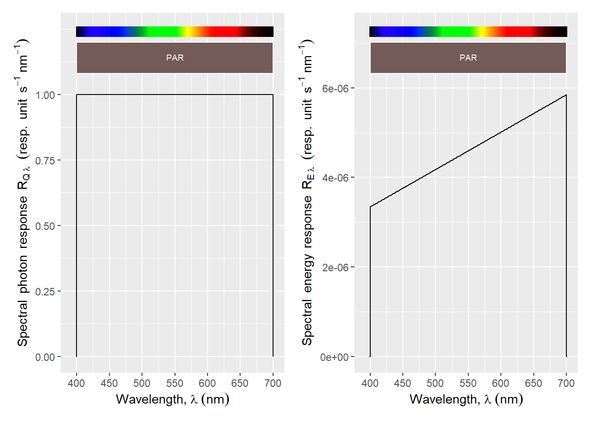

Code
autoplot(PAR(), unit.in = "photon", unit.out = "photon") |
autoplot(PAR(), unit.in = "photon", unit.out = "energy")

UV, VIS and NIR
Lars Olof Björn, Andy R. McLeod, Pedro J. Aphalo, Andreas Albert, Anders V. Lindfors, Anu Heikkilä, Predag Kolarz, Lasse Ylianttila, Gaetano Zipoli, Daniele Grifoni, Pirjo Huovinen, Iván Gómez, I. and F. López Figueroa
$$
In this chapter the quantities guidance is given on how to measure and how to interpret quantities describing the properties radiation, including the application of the concepts of radiation physics presented in Chapter 2 to the description and quantification of radiation in ways relevant to experimentation in photobiology and management of crops.
In research, When describing experimental conditions it is necessary to avoid all ambiguity, so that current results can be interpreted correctly and experiments reproduced. Expressions such as “light intensity” and “amount of light”, which are ambiguous, must be avoided. In addition to in scientific and technical research, ambiguity must be avoided in equipment specifications and management recommendations targeted at growers and other stakeholders that use the information provided as a base for decisions affecting the success of their activities or even the implementation of government policies.
Instruments used to measure the properties of radiation are imperfect. All measurements are subject to errors and uncontrolled variation. Some of this variation inherent to the individual instrument including bias but variation also occurs in response to other variables in the environment such as temperature. The radiation-detectors used in some sensors as well as electronic components used in the circuits that amplify and record the measured quantities, age, i.e., their properties change with time. Thus,to ensure accuracy and reproducibility, recalibration of instruments at regular intervals is a must.
How the instruments are used, i.e., consistency in following a correct measurement protocol and awareness of the limitations of the equipment are unavoidable requirements for accurate and reproducible measurements of all properties of radiation.
With a spectroradiometer spectral irradiance is measured, usually expressed in \mathrm{W\,m^2\,nm^{-1}} or equivalent units differing only by a scaling factor such as \mathrm{mW\,cm^2\,nm^{-1}}. The wavelength resolution of spectrometers can vary from a fraction of a nanometer to a few tens of nanometers. What distinguishes data obtained with a spectroradiometer is that radiation over a wide range of wavelength is quantified at each of many (\gg 100) contiguous narrow wavelength “slices” or bands. Spectrometers can be grouped into two main groups: spectrometers based on an array of detectors and a single static monochromator grating, and scanning spectrometers based on a single detector and one or two moving monochromators. Within each approach there are different types of detectors in use.
Broadband sensors in most cases measure irradiance in a single broad range of wavelengths or band. Some sensors, however, measure two or even a few bands. In practical use the main difference compared to spectroradiometers is that the range of wavelengths integrated to compute the irradiance is fixed. Thus, many different types of broadband sensors exist, targetting different bands of the spectrum or implemented using different approaches.
A comprehensive glossary of terms relating to visible and ultraviolet radiation has been published by Braslavsky (2007). It can be downloaded from the Internet (see link in reference list).
After an introduction to the different types of instruments and discussing generic features of measurement protocols including some caveats, the remaining of this chapter is organized by physical and biologically relevant quantities, starting from those covering the widest range of wavelengths. For each quantity commonly used sensors and instruments are described together with specific measurement protocols and common errors and pitfalls affecting them. Suppliers known to the authors are also listed.
Spectroradiometers[^22] are instruments used to measure spectral irradiance. There are two types of spectroradiometer: 1) scanning spectroradiometers, and 2) array detector spectroradiometers. The former have a single sensor, which is used to sequentially measure the spectral irradiance at each wavelength, while the latter have an array of sensors onto which the refracted spectrum is projected and measured simultaneously at all wavelengths. Sometimes the more general term spectrometer is adopted to indicate that the same instrument can be also used to measure spectral absorbance, -transmittance, or -reflectance, in addition to spectral irradiance. Scanning spectroradiometers scan a range of wavelengths. To do this they require mechanically moving parts inside the optic path and therefore need very stable housing for the instrument. For this reason, scanning spectroradiometers are larger and more difficult to transport than array detector spectroradiometers. They are also less rugged and usually require mains power. However, in scanning spectroradiometers it is possible to use a double monochromator arrangement that makes their optical performance far superior to that of array spectroradiometers which always use a single monochromator.
The basic components of a scanning spectroradiometer are the following: a) input optics for collecting radiation from the sky and guiding it further into the spectroradiometer b) a monochromator for resolving the input radiation into separate wavelengths c) a photomultiplier tube (PMT) for detecting the energy possessed by each spectral component in the measured spectrum. In addition, an external computer for communication with the microprocessor of the spectroradiometer and for collection, processing and storage of data is needed.
The input optics typically consists of a flat teflon diffuser covered by a quartz dome. The diffuser collects the incident photons from the overhead hemisphere. The resulting diffuse radiation is guided to the entrance slit of the monochromator, sometimes by means of an optical fibre. The monochromator may be a single or a double monochromator (see section 8.2.4 on page ). In scanning spectroradiometers, a system based on a step motor drives a mask that allows only photons of a certain wavelength at a time to enter the exit slit of the monochromator. The exit slit serves as the entrance window to the cathode of the PMT. The photon pulses are amplified and transmitted to a photon counter for registration.
Some spectroradiometers are constructed on a solar tracker that follows the position of the sun. This eliminates the effects of potential azimuthal dependencies in the detection of radiation. A measurement head at the end of an optical fibre may be also installed on a separate sun tracker. The temperature of the instrument is usually either stabilized or kept above a certain temperature limit to ensure proper functioning. The dome of the measurement head may be equipped with a heater and/or air blower to keep the temperature of the teflon within certain limits and to avoid emergence of frost onto the dome.
Other spectroradiometers are less rugged and are intended for laboratory or spot measurements outdoors. They are more portable but more sensitive to temperature extremes and are not water proof. Examples of such instruments are Optronics OL 756 and Macam SR9910 spectroradiometers. Figure [fig:Optronics:OL_756] shows the different parts of the first of these instruments.
The more rugged instruments, usually permanently installed at a fixed location, are commonly used for measuring long (several years long) time series of spectral irradiance data. The more portable instruments are used for spot measurements in plant canopies, and under lamps, and or filters. The first type of instrument is most commonly used by meteorologists, while the portable instruments are most useful to biologists.
Dark current and dead time are characteristics possessed by the PMT. Dark current is a measure of the drift photons going from the cathode to the anode of the PMT without any real incident photons entering the instrument. Dead time is a measure of that PMT which is in a paralysed state after a photon detection event. Stray light is composed of photons echoed from wavelengths other than the nominal wavelength being measured. In commercially available scanning spectroradiometers, these phenomena are usually measured and handled by the measurement software.
The wavelength alignment of a spectroradiometer has to be checked regularly. Most instruments taking daily measurements contain an internal mercury lamp aimed at ensuring the stability of the alignment. The wavelength and the position of the micrometer turning the grating of the monochromator are related to each other by a second-order equation using so called dispersion coefficients. The determination of the dispersion coefficients should be part of the annual maintenance of the instruments.
Solar irradiance spectra sometimes exhibit so called noise spikes, which mean sudden abnormally high or low intensity readings on a single wavelength. The origin of the spikes is not fully resolved, but straylight is considered a partial explanation. The spikes can be detected and eliminated making use of suitable reference spectra.
Ideally, the angular response of the measurement head follows the shape of a cosine curve. In practice, the response deviates somewhat from this. Typically, the larger the solar zenith angle, the larger the deviation. The cosine response of the measurement head should be measured in laboratory and a corresponding correction applied to all measured data.
If the spectroradiometer is not stabilized for temperature, its response usually exhibits temperature dependence. This dependence should be determined in the laboratory by measuring a calibration lamp with a spectroradiometer heated/cooled over a range of different wavelengths. The measurements can be used for deriving the temperature correction factors to be applied in the post-processing of the sky measurements.
The slit function determines the transmittance of a monochromator as a function wavelength. The ideal shape of the function would be triangular. The full width at half maximum of the slit function is commonly used as a quantity characterizing the slit function. The slit function can be derived by measuring the irradiance emitted by a tunable laser. Removal of the effect of the slit function on the measured spectra should be considered if spectra measured by two or several instruments are to be compared with each other.
The spectral responsivity of a spectroradiometer should be based on regular measurements of a certified calibration lamp. If the responsivity seems to have changed, basically two alternative ways to handle the change exist. The change may be introduced in the responsivity of the instrument and the processing of the sky measurements as such. A step-wise change in response is hence introduced in the time series of the measurements. Alternatively, a gradually changing response time-series may be defined using a moving average with a suitable time window. In this way, the change in the response is introduced gradually in the time series of the sky irradiance measurements.
The maintenance of a scanning spectroradiometer operating in an outdoor environment involves the following practices: a) general daily maintenance; b) checks on the wavelength setting and stability of irradiance scale; c) calibration of irradiance against primary standards in a dark room.
Daily routine maintenance includes cleaning of the quartz dome and checking on the general functioning as well as the correct levelling of the instrument. The quartz dome should also be cleaned/dried after rain or snow. The operator should be familiar with the control software of the instrument. Additional simple routines based on, for instance, selected reference spectra may be used for instant checking of the measured data. These kinds of routines are invaluable in the prompt detection of occasional malfunctions of the instrument.
An internal Hg lamp is used for checking of the wavelength scale in some spectroradiometers. In these cases, it is convenient to imbed the Hg lamp measurement into the daily measurement schedule. If the instrument lacks an internal lamp, this check has to be done using an external lamp. For checking the stability of the irradiance scale, portable calibration units are available. These enable, for instance, stability checks of the instrument at the measuring site on a weekly basis. It is advisable that the humidity indicators are also checked on a weekly basis.
Irradiance calibration of a spectroradiometer should be performed in a dark room (Figure [fig:Brewer:calibration]). A primary standard lamp with an irradiance certificate provided by a certified laboratory of standards is needed. To extend the lifetime of the primary standard lamp, it is recommended that it is not used as a regular calibration lamp. Instead, the irradiance scale of the primary lamp should be transferred to a secondary standard lamp that is used as a working calibration lamp. Use of several working lamps is recommended to enable recognition of potential drifts in the radiant output of the lamps as they age. Calibration against the primary/secondary standard lamp should be performed at least every two months. The desiccant bags inside the cover of the spectrometer should be taken out and dried at least every two months as well. Proper levelling of the instrument has to be ensured after having it relocated for outdoor measurements.

On the annual maintenance practices of a spectroradiometer, each manufacturer has its own services and recommendations. Participation in intercomparison campaigns gathering a number of state-of-the-art instruments to conduct measurements on a jointly agreed schedule for a period of time has proven a fruitful way to investigate the long-term stabilities and overall performances of scanning spectroradiometers (Figure [fig:Brewer:intercomparison]).

In contrast to scanning spectroradiometers, array detector instruments measure spectral irradiance simultaneously at all wavelengths. The detector in this case is a linear array of light sensors, similar in structure to the imaging sensors used in digital cameras, but long and narrow. The number of detector elements (‘pixels’) along the array varies, 2000 to 3000 pixels being common[^23]. The array can be a ‘charge coupled device’ (CCD), or an array of photodiodes (DAD). The ‘image’ of the spectrum produced by the monochromator is projected and focused by means of mirrors onto the linear detector array, each detector in the array receiving light of a certain wavelength. In the case of array spectrometers it is not possible to use two monochromators in tandem to reduce stray light. Array spectrometers are small and portable (Figure [fig:Maya2000Pro]).


For measuring energy or photon spectral irradiance a cosine diffuser is used as input optics. This ensures that the angular response follows the cosine law, and so the instrument measures the radiation as received on a flat surface. Other input optics are also available, for example, with a narrow angle of view. However, the quantity measured with them is not irradiance. Cosine diffusers differ widely in how closely they follow the cosine law. Some cheaper models are prone to large errors, especially when radiation impinges at a sharp angle to their surface. This will be further discussed in section 9.7.2.1 on page .
The input optics is usually connected to the array spectrometer with an optical fibre. The type of fibre to be used depends on the wavelength range to be measured. If smaller than the entrance of the spectroradiometer, the diameter of the fibre will affect the amount of radiation entering the instrument. The diameter also affects the mechanical properties of the fibre: thin fibres are more flexible and tolerate bending into curves of smaller diameter. Fibres also vary with regards to the type of cladding material used to protect them. Fibres with metal cladding tolerate rougher handling than those with plastic cladding. The most common connector for these fibres and accessories is the SMA 905, originally designed for light fibres used in digital communication systems. For this reason their positioning upon repeated attachment is not exactly the same. Consequently, the recommendation is not to detach and reattach the fibre from the spectrometer without recalibrating the system[^24].
At the entrance of the spectrometer, just behind the connector to which the fibre is attached, there is a slit (Figure [fig:CCD:slit]), which limits the width and height of the incoming light beam. The width is of the order of a few micrometres and the exact value chosen determines, together with the monochromator, the spectral resolution of the spectroradiometer. The narrower the slit, the narrower the beam hitting the monochromator and the better the resolution (the narrower the peaks that can be resolved). In a Czerny-Turner configuration (Figure [fig:optical:bench]), the next component is a collimating mirror which projects the beam onto a monochromator. Gratings are used as monochromators. Gratings have a surface with very closely spaced rulings of a specific profile, and they separate radiation of different wavelengths in a similar way to a prism. One important parameter is the density of rulings which is one of the determinants of spectral resolution and useful wavelength range. The ‘image’ produced by the grating is focused onto the array detector by another collimating mirror. Some newer models of spectrometer from StellarNet (e.g. BLACK-Comet spectrometer) and now also from Ocean Optics (Torus spectrometer) use a concave grating instead of a planar one. Since the grating itself focuses the light onto the array detector, collimating mirrors are not needed. Having fewer optical components, an instrument with better stray light performance is obtained.
The array detector normally has rectangular ‘pixels’, orientated so that their shorter dimension is on the axis along which the different wavelengths have been separated by the monochromator, and their longer dimension is perpendicular to it. The entrance slit is positioned to have the long dimension coincident with the long dimension of the pixels. In some detectors the long pixels are in reality rows of square pixels with their electrical output combined into a single output signal. The output signal from the pixels is averaged by the detector itself over what is called ‘integration time’. The longer the integration used, the lower the irradiance that can be measured. However, the ‘dark noise’ increases with the integration time. In addition, it is possible to take several scans and average them. A coarse dark noise correction is sometimes done by subtracting the signal from special pixels at the end of the array that are not exposed to radiation. However a dark scan, with the input optics protected from the incoming radiation, should also be measured, and its value, wavelength by wavelength subtracted from the measurements. The dark noise depends on temperature. This has two implications, dark scans should be taken frequently, sometimes before or after each measurement, and the spectrometer should be allowed to warm up for some minutes before starting to take readings. Furthermore, when working outdoors it should be protected from direct sunlight, so as to keep its temperature stable and close to that at which it was calibrated. Some spectrometers have a thermoelement (TE), working according to the Peltier principle, which cools the array detector to a preset temperature and thereby stabilizes it.
Most array spectrometers, the exception being some older models with thermoelectrically cooled detectors, are powered through the USB port. This can be the same USB link to a personal computer used to control them and retrieve the acquire spectral data. With the power delivery (PD) charging protocol now available, USB-C ports can provide much more power that the original USB 1.0 and 2.0 standards.
For field and mobile use a laptop is frequently used to control array spectrometers. Special software, sold by the manufacturer of the spectrometer, is frequently used to control the instrument and acquire and plot the spectra.
For most instruments there are also drivers and software development kits (SDK) available for developing programs for special applications. When special corrections, for example for stray light, are performed it may be necessary to acquire raw spectral data and apply corrections and calibrations off-line using other software, for example Excel or R. In some cases it is possible to control spectrometers and acquire data using a microcontroller board such as the Raspberry Pi.
Many modern array spectrometers can communicate through Ethernet in addition to through USB. This makes it possible to control them through a local area network (LAN) or through a wide area network (WAN) such as the Internet.
In recent years handheld array spectroradiometers have become available that have a screen and small keyboard to control them. Nost of them are not designed to measure ultraviolet or infrared radiation but only vsisible. Several of these can be controlled wirelessly with a mobile phone through Bluetooth. Many of these are not intended for or accurate enough for use in scientific research. However, a few of them are. One example in the LI-180 from LI-COR. The proliferation of suppliers of low cost spectrometers, frequently providing incomplete descriptions and specifications, makes it hard to recommend any of them for serious use, even if some could be fine and be available in the future to provide support, repairs and updates.
Array spectroradiometers have a great advantage when quickly measuring changing radiation as they acquire all wavelengths simultaneously. This ensures that the values of spectral irradiance measured at all wavelengths are consistent. In contrast, under conditions where irradiance varies rapidly with time, the shape of the measured spectrum can get badly distorted when measured with a scanning spectroradiometer. However, array spectrometers have a serious limitation in that they cannot be built with double monochromators. As any spectroradiometer with a single monochromator, they suffer from relatively high values of stray light. Stray light originates from scattered light of incorrect wavelengths falling on a pixel of the array detector. In other words, radiation of one wavelength is detected (and measured) as radiation of a different wavelength. Perfectly scattered radiation would affect all pixels in the same way, but when there are reflections within the optical bench that are not perfectly scattered, some pixels in the array detector are more affected by stray light than others. Stray light is a critical specification when measuring UV-B in sunlight, as UV-B irradiance is very low compared to the irradiance of visible and near infra-red radiation. Consequently, if even a small proportion of visible radiation is scattered and reflected as stray light within the instrument, this stray light can generate a signal on the ‘UV-B pixels’ of the array of a magnitude similar to, or larger than, that produced by the radiation that we are trying to measure. Stray light is such a big problem that without very complicated and special corrections these instruments cannot be used at all to measure radiation in sunlight. Errors of more than 100%[^25] for biologically effective doses can be incurred even with a well calibrated instrument. Failure to take this into account has led to important mistakes, like the erroneous measurement of solar radiation at ground level by NASA researchers which was published in Geophysical Research Letters. This was most likely an artifact due to the limitations of the array spectrometer used. See the paper by D’Antoni et al. (2007) and the refutation by Stephan D. Flint et al. (2008) and the answer by D’Antoni, Rothschild, and Skiles (2008). Equally, the values of the UV-B doses used in many recent biological experiments, as reported in the publications, are suspect, since they have been based on measurements performed with single-monochromator instruments.
Gratings disperse radiation according to what are called ‘orders’. For example first order dispersion may be 10 nm/mm, second order dispersion 5 nm/mm, third order dispersion 2.5 nm/mm, and so on. The first order spectrum is what is of interest, and is what we want the array detector to see. However, any given ‘pixel’ in the array, in addition to radiation corresponding to the first order (e.g. 800 nm), also sees radiation corresponding to higher orders (e.g. 400 nm, 266.6 nm, 200 nm, and so on) if those wavelengths are present in the incoming radiation. The solution to this problem is to use ‘order-sorting filters’ in the light pass. In array spectrometers order-sorting filters may be directly coated onto the array detector, or attached to it. For example Ocean Optics spectrometers can be bought with a variable longpass order-sorting filter as an option (Figure [fig:CCD:slit]).
Another problem with array detector spectrometers is that the radiation may be better focused on some parts of the array than on others, and this causes changes in spectral resolution with changing wavelengths. In addition, the wavelength difference between adjacent pixels is not always the same across the whole spectrum, neither is the step size an integer number. Usually the software supplied with the instrument can generate files with data at integer steps (e.g. 1 nm, or 5 nm) but this is done by interpolating and averaging, rather than changing the measurement itself. In contrast the scanning step of scanning spectroradiometers can be controlled through its software.
The overall accuracy of the measurements is also reliant on the angular response of the entrance optics. For measuring spectral irradiance we generally use a cosine diffusor as entrance optics, although it is also possible to use an integrating sphere. Deviations of cosine diffusers from the theoretical angular response tend to increase at large angles from the vertical. If the spectrum of the light coming from different angles is different (e.g. sun and sky) not only the irradiance measured may be inaccurate but also the shape of the spectrum may be distorted. When measuring outdoors, the size of this error will change through a day as the sun moves across the sky. The very small cosine diffusers sold by the spectrometer manufacturers tend to be prone to large errors, and individually calibrated, high quality diffusers like the D7-SMA and D7-H-SMA from Bentham (see section 9.20 on page for full address) are preferable, although they are much more expensive (Figure [fig:Bentham:diffuser]).
When measuring UV-B with an array spectroradiometer it is not enough to have it properly calibrated, its optical characteristics (slit function at different wavelengths, stray light properties) need to be measured and a correction algorithm developed and later applied to each measurement. This makes the use of array spectroradiometers for characterizing UV-B doses complicated and error prone. This type of use has to be attempted only by experienced operators and the correction algorithm itself requires lots of effort to develop and implement. Given the lack of standardized procedures for stray light correction, its implementation requires advanced knowledge of optics and metrology. We will first discuss spectral calibration and thereafter stray light correction procedures.
Spectral calibration against standard lamps needs to be repeated regularly. For measurements not requiring very high precision, annual re-calibrations may be enough. However, the main consideration should be how valuable is the data that will be acquired. If the spectral sensitivity of the instrument has changed significantly from one calibration to the next, the data from all measurements done in between these calibrations are suspect, and should be discarded. Consequently if one does yearly re-calibrations one can lose one year’s worth of data, while if one does monthly re-calibrations one only risks losing one month’s worth of data. Consequently, the decision on how frequently to calibrate should, in addition to instrument stability, be based on the maximum size of the tolerable errors and on the value of the data (i.e. the cost of replacing the data if they need to be discarded).
The most common and stable calibration light sources are incandescent lamps (e.g. FEL lamps) with electronics in the power source which keeps the electrical power at the filament constant within very narrow margins. The distance between the lamp and the entrance optics, and their alignment, should also fall within a very narrow margin of the expected values. Calibration lamps are secondary or tertiary standards, connected by a chain of calibration steps to a standard kept at a metrology agency like NIST. Calibration lamps are supplied with spectral data about their emission characteristics. Calibration of the instrument is done by measuring the known spectrum and irradiance of the calibration lamp. Of course the output of the lamp will not exactly match the data supplied with it, because its original calibration is also subject to errors. Furthermore, there are errors deriving from slight differences between the burning conditions (current and voltage) during measurements and those when it was calibrated at the factory. Further errors can be introduced by small differences in the geometry of the optical setup. So, do not forget that calibrations are subject to errors. Furthermore, you cannot obtain an absolute estimate of calibration errors by comparing two instruments calibrated with the same lamp, unless this lamp is the primary standard.
Calibrating a spectroradiometer in the UV-B band with a FEL lamp is not recommended, because FEL lamps emit very little UV-B. For calibration in the UV-B deuterium lamps need to be used. Irradiance emitted by deuterium lamps is less stable than that emitted by FEL lamps. For coarse calibration the use of a deuterium lamp may be enough, but for accurate calibration it is best to use FEL and deuterium lamps in tandem. The shape of the spectrum emitted by deuterium lamps is stable, by matching the irradiances at wavelengths where the emission of both types of lamps overlap, one can extend an accurate calibration to shorter wavelengths. Spectrometer manufacturers also sell calibration light sources (lamp plus electronics) that may be good for routine calibration or especially for checking that calibrations performed in an optical bench remain valid. Again, what type of calibration procedure and lamp to use will depend on the accuracy required. If we want our measurements to be within \pm 10% of the true value we will need to use very good equipment and protocols for the calibration. If we can tolerate errors of, for example, \pm 25%, calibrations can be less accurate.
It is also very important to do a wavelength calibration and to check this calibration regularly. It should not be forgotten when doing this calibration that it is affected by the temperature of the instrument as temperature affects (by thermal expansion) the dimensions of the optical bench and its components. Wavelength calibration is done based on elemental emission lines in discharge lamps (or even the sun). For quick checks low pressure mercury or germicidal lamps may be used. The manufacturers of spectrometers also sell special light sources for wavelength calibration. One should choose carefully which wavelengths to use (for example 253.652 nm, 296.728 nm, 334.148 nm, and 404.657 nm for mercury lamps, as they are simple peaks rather than multiple peaks very close together like those at 302 nm, 313 nm and 365 nm). If one desires a calibration accurate to a fraction of the wavelength step of the array one needs to fit a bell-shaped curve to the pixel showing the highest signal and those adjacent to it, to find the true location of the peak centre, most likely in-between two pixels.
To keep errors within \pm 10% in the UV-B when measuring sunlight, and especially to keep errors within \pm 10% for biologically effective doses, a good calibration is not enough when using single monochromator spectroradiometers. There is also a need to correct for stray light. If we do not correct for stray light some biologically effective doses will be overestimated by more than 100%. The ratio between stray light in the UV-B band and the maximum spectral irradiance measured in good single monochromator spectrometers is approximately 1\times 10^{-3}, while in double monochromator spectroradiometers it can be as low as 1 \times 10^{-6}. If time for scanning, cost and lack of portability are no obstacles, it’s preferable to use double monochromator instruments and these should also be used as the main instrument in a laboratory.
When applying the stray light correction, a thorough characterization of the slit function at different wavelengths and a check of the wavelength dependence of stray light are needed. This characterization does not need to be repeated, unless changes are made to the optical bench of the instrument. So, in contrast to the spectral calibration, the stray light characterization needs to be performed only once during the lifetime of the instrument unless major repairs or modifications are made.
In some array spectrometers, depending on the configuration, the width of the slit function may vary with the wavelength. This can introduce errors that are very difficult to correct. In some cases it might be preferable to chose a grating giving the instrument a relatively narrow wavelength range, for example 250 nm to 500 nm if the intended use is to measure ultraviolet radiation.
The use and calibration of array spectroradiometers for measurement of UV-B radiation in sunlight is discussed in detail in the WMO report by Seckmeyer, Bais, Bernhard, Blumthaler, Drüke, et al. (2010). Stray light correction methods are discussed in the papers by Ylianttila et al. (2005), Coleman, Sarkany, and Walker (2008), and Kreuter and Blumthaler (2009) and the references therein.
Broadband sensors in most cases measure irradiance in a single broad range of wavelengths or band. Most broadband sensors used in plant research are based on a photodiode, a filter to constrain the range of wavelengths reaching the photodiode and a diffuser that provides an angular response close to that proportional to the cosine of the angle of incidence of light over \pm90^\circ from the normal, in three dimensions.
Not all broadband sensors measure irradiance: sensors with a different angular response that proportional to the cosine of the angle are also available. Of these, most common are those with a narrow aperture angle such as \pm5^\circ from the normal. Spherical diffusers are used in aquatic sciences to measure fluence rate and spherical irradiance. Least common are hemispherical diffusers used to measure hemispherical irradiance or the fluence rate on a plane.
In traditional multichannel broadband sensors, such as red and far-red sensors, each channel consists in a discrete photodiode and filter, with the channels sharing the same cosine diffuser.
Not all broadband sensors rely on Silicon photodiodes. Some broadband sensors are based of photodiodes made of other semiconductor materials such as Silicon Carbide, Germanium, and Indium Gallium Arsenide. In addition, some ultraviolet sensors rely on the secondary emission from an intermediate compound to convert ultraviolet radiation into visible radiation that can be more easily detected with Silicon photodiodes. These will be discussed later as the detector choice depends on the wavelength band measured.
Although many broadband sensors simply provide the raw electric current from the photodiodes as output, others have built-in amplification with a voltage output, More recent designs include analogue to digital conversion circuitry and provide as output through a digital interface. Nowadays, some suppliers even sell multiple versions of each of their sensors, differing only in the interface used to retrieve the readings. As these interfaces are unrelated to the measured quantities, they are described here.
The spectral response of broadband sensors almost always differs to a larger or smaller extent from that in the definition of the quantity being measured. The consequence of this is that the calibration of any broadband sensors is not constant, it varies depending on the spectrum of the radiation being measured. In some cases these differences are so small that can be ignored, but in other cases ignoring they can introduce large biases, invalidating the measurements. In general the broader and more featureless radiation spectrum is, the less likely a large bias is. In addition, some patterns of spectral response are technically easier to create than others.
A very frequent and grave mistake is to assume a priori that a calibration provided by the sensor supplier, e.g., for sunlight is applicable to artificial light sources, such as discharge lamps, incandescent lamps or LEDs. Some suppliers provide approximate correction factors (e.g., Apogee for sensor SQ-301X-SS) or clear warnings in the documentation, while others do not even warn users. In the case of sensors good enough to be used in research, suppliers do provide typical spectral response curves. Such curves are not guaranteed, and should be taken with a grain of salt but can be used to estimate the possible calibration errors. This does not replace a light-source specific calibration.
The electrical current generated by a photodiode is almost proportional to the absorbed photons of a given wavelength, until its response saturates. The dark current is extremely low. Thus, the best Si photodiodes show a linear response over several orders of magnitude of irradiance. As the current depends on the captured photons, the larger the area of the photodiode the higher the current generated. The principle of operation is similar to that of solar panels used for power generation. The diodes used in sensors have relatively small area and the generated current is small, in the order of a few mA. Thus long wiring can distort the signal or pick electrical noise from other devices. A sensitive and accurate measuring device is necessary to measure medium and low irradiances. Each sensor and sensor channel needs to be wired individually to a current measuring device with a high enough impedance not to affect to the functioning of the sensor. These sensors do not require a power supply and only two wires needed between the sensor and meter or datalogger. The time constant of the these sensors is very short, in some cases less that a ms and dependent on the capacitance of the wiring.
Some sensors have a built-in amplifier that converts the small current generated by the photodiode into a voltage, commonly in 0\ldots 5 V or 0\ldots 10 V. Unless the amplifier is very well designed, it can introduce a small zero offset and introduce temeprature dependence. These sensors do require power for the amplifier to operate. The wiring is less sensitive to electrical noise and a measuring device of lower sensitivity and impedance can be used without affecting the accuracy of the measurement. The time constant of the response of these sensors vary as it is mainly dependent on the design of the built-in amplifiers. It can vary from a few ms to 1 s or longer.
Rarely used in research but frequently used in indutrial automation are amplified sensor with a current output in the range 4\ldots 20 mA. In this protocol 4 mA corresponds to a zero reading. This relative high current makes this type of wiring rather inmune to electrical noise. The drawback is that these sensors consume more power than those using alternative approaches, making them unsuitable for battery or solar-panel powered systems.
Digital communication protocols can provide two big advantages: the sharing of wiring among separate sensors or between channels in a single sensor. As data are transmitted as encoded numbers, their integrity can be checked. The most frequently used wired protocol is SDI12 (serial data interface at 1200 bit s-1). These sensors have built in circuitry for converting the current from the sensor or the amplified voltage into a digital value. Many are also able to computed time averages from individual measurements and keep the most recent value in local memory. The “measuring” device, computer or logger, queries the sensor for specific data and the sensor replies by sending a number encoded as train of binary 0 and 1 plus a code to check integrity. Each sensor has an address that identifies it within the sharing wiring and the logger or other measuring device addresses its queries to a single sensor at a time. Multiple commands can be implemented in a single sensor, even commands that change its behaviour. It allows long wiring in addition to sharing it. Its drawback is that the data rate is low, so data can be retrieved from sensors at most once every few seconds. This time increases the more sensors share the wiring as they need to be queried sequentially. Sensors implementing the SDI12 tend to be more expensive than those based on simpler approaches. On the other hand they remove the need to use loggers capable of accurate and high resolution analogue to digital conversion.
In addtion to SDI12 other digital electrical and communication protocols are in use for sensors. Two well-known serial protocols are RS-232 and RS-485. The first of them is point to point with no sharing of wiring and it was common in personal computers in the 1980’s and 1990’s. RS-232 even is data are sent serial through a single pair of wires, acknowledgement and synchronization takes places through additional wires. In RS-485, from around the same time, wiring can be shared and addressing and coordination requires fewer wires. These are electrical protocols. MODBUS is a comand protocol that uses RS485 and is still in use, mainly in industrial automation but occasionaly also for tasks like greenhouse automation and sensors.
A newer type of sensors, originally developed for use in mobile phones and TV sets, are integrated circuits that have multiple photodiodes and the ancillary amplification and analogue to digital conversion electronics built-in. They come in SMD pacakages with footprints as small as 2\times 3 mm. In some cases the photodiodes have interference filters deposited directly onto the silicon chip surface creating channels responsive to different wavelength bands. These sensors are extremely small with all channels tightly clustered within an area of the order of one to a few square millimetres. Some of these sensors can do simple digital data processing to convert the measurements into physical or photobiological quantities of interest. These sensors are designed to be paired to microcontrollers and communicate with them using short-range digital serial communication protocols and installed in devices. Ready to use devices, specially weather-proof ones, are not yet commercially available. Some very cheap handheld spectrometers are probably already based on these sensors, although the suppliers do not disclose their design. Small modules including a logger have been developed based on these integrated circuits. Also instructions, breakout boards, code libraries are available for different popular micro-controller-based boards like different flavours of Arduino, Rasperry Pi and ESP32. Compared to traditional sensors these modules are much cheaper and less accurate but still very versatile. For example the 14-channels AS7343 spectral sensor from ams OSRAM sells for 7 € individually and much cheaper in quantity. The USB module Yoto-Spectral from Yocto-Puce with built-logger based on this same spectral sensor sells for 60 €. These sensors are less accurate than traditional ones but the cost advantage is overwhelming allowing high replication while the built in logger makes deployment easy.
There are multiple approaches to wireless transmission of sensor data. Some rely on protocols widely used in other domains, such as Wifi, Bluetooth or even GSM. In recent years the popularization of the internet of things (IoT) has encouraged the development of protocols optimised for transmission of sparse data from sensors, including LoRa and low throughput/low energy variants of Wifi and GSM.
Selecting the wireless protocol to use depends mainly on necessary range, data transmission throughput and the availability of power sources. The architecture, meaning which data links are wired and which ones wireless can also vary. One approach is to have individual sensors communicating wirelessly to a base station where data are collected and possibly forwarded to remote storage (e.g., Aranet’s). Alternatively, multiple sensors can be wired to a hub and the hub connected wirelessly to a router by Wifi, wired through ethernet or through GSM or some other protocol.
On-site data loggers with wired sensors is a common and relaible approach, both at accessible and remote sites. Data are stored locally but in most cases can be accessed locally, remotely or both. Data are normally downloaded from the logger in batches. Modern loggers with ample memory can safely store large data sets. Most loggers have an assortment of inputs, both analogue and digital making it possible to attach sensors based on a mix of different analogue and digital communication protocols. The best data loggers have analogue to digital converters (ADC) with a resolution of 24 bits and auto ranging. Some dataloggers like Campbell Scientific CR6 can take up to 100 readings per second simultaneously on more than one analogue input. They can be programmed to take measurements only under certain conditions, compute and store summaries like means and histograms instead of raw data, to power on and off instruments and control ancillary equipment like cameras. Data loggers for use in the field have been around for over 50 years and are a stable and reliable, but expensive.
Small loggers, with only one or two channels and built-in sensors have been available for some decades. Illumination loggers and PAR loggers are available. Most of these sensors do not provide as good a performance as separate sensors and loggers but are overall cheaper and easier to deploy, although on site data collection from multiple loggers can become time consuming. The iButton Thermocron temperature loggers in a button-cell-like case are widely used, rugged and small. Nothing like them is available for measuring light. PAR loggers are larger in size.
Some sensors with logging capabilities are also capable of being remotely accessed. They provide the best of both worlds as data are locally stored independently of any break in communication, but can be accessed remotely to download the data, change settings or even update the firmware.
The rest of this section is organized with one section for each group of related measured quantities. In each of these sections the different instruments and sensors and well as computations used to compute them from spectral irradiance are presented.
The term global radiation describes the radiation at ground level that arrives from the sun, what in meteorology is called shortwave radiation, extending from approximately 290 nm in the UV to nearly 4000 nm in the IR. Pyranometers measure radiation in this range as energy irradiance (\mathrm{W\,m^{-2}}).
Pyranometers are the most common radiation sensor used in meteorology, and long-term time series of data from weather stations are available. The best performing pyranometers use as sensor a blackened thermopile (multiple thermocuples in series) enclosed to isolate it from the air and external temperature chanes. The thermopile behaves like a black body and warms up in response to the incident energy flux. A difference in temperature between the two sides of the thermopile generates a voltage difference approximately proportional to the energy flux. The design ensures that radiation of all wavelengths in the global radiation range are nearly fully and equally absorbed. Consequently, for radiation within the range 290 nm to nearly 4000 nm a single calibration is valid. In contrast to most other radiation sensors, the spectral response of thermopile pyranometers is in nearly perfect agreement with the theoretical quantity they are intended to measure. The performance of thermopile pyranometers is described using standardised “classes”, with each class having different requirements for performance and accuracy. The current ISO 9060:2018 standard, calls the classes: A, B, and C, with required minimum performance decreasing from A to C (formerly named “secondary standard”, “first class” and “second class”. Thermopiles in pyranometers are protected by one or two concentric quartz domes. Some thermopiles used to measure radiation in laboratories have more rudimentary or no protection. The best know supplier of pyranometers is Kipp. The original design of the thermopile and domes has remained nearly unchanged for decades. Versions with amplified and calibrated voltage output, amplified current output as well as digital output have been released more recently and coexist with earlier ones.
Cheaper “silicon” pyranometers work on a very different principle: a semiconductor photodiode generates a current of electrons proportional to absorbed photons. The response varies with wavelength not only because of the varying energy per photon, but also because the quantum efficiency varies with wavelength. The spectral response of these pyranometers is not flat with respect energy or photon irradinace. In other words, there is a mismatch between the spectral response of the sensor and the spectral weighting of the physical quantity measured. The consequence of this is that sensor calibration is not independent of the spectrum of the radiation being measured! This is also the case with most other broadband sensors based on silicon, silicon carbide, and other semiconductors.
Global radiation cannot normally be computed from measured spectral irradiance, as spectrometers in common use do not have a wide enough wavelength sensitivity range.
Given the central role of photosynthesis, multiple radiation quantities have been proposed over the years and a few competing ones remain currently in use to quantify radiation that can drive the light reactions of photosynthesis. The currently most frequently measured irradiance in relation to plants, is the photon irradiance of photosynthetically active radiation (Q_\mathrm{PAR}) frequently described as photosynthetic photon flux density and abbreviated PPFD. However, several other quantities can be found in the current and past scientific literature on plant biology, plant ecology and meteorology.
Early on, given the availability of illuminance sensors, values expressed in lux and foot candles were frequently used. In meteorology pyranometers, and in Physics thermopiles, described above, have been in use for a long time, and were also used to report energy irradiances. Both of these approaches are inadequate and have been mostly abandoned.
The earliest and simplest approach that considered the response to light of photosynthesis was to constrain the range of wavelengths over which spectral energy irradiance was integrated to those contributing to photosynthesis. Of course, spectral photon irradiance can also be integrated over a wavelength range. However, as described in chapter XXXX, the use of photon or energy as base of expression quantify radiation are not equivalent, and interconversion is only possible if the spectrum shape is known. As for any photochemically driven reaction, absorption of photons excites chlorophyll molecules and this excitation energy drives the chemical reactions. Thus, from a mechanistic perspective photon irradiance should be preferred. Still in the early 1970’s there was no consensus and multiple ways of describing the radiation in studies with plants, including photosynthesis, where in use. To make things worse, interconversion was in most cases impossible as spectral information was missing (McCree1972a?), McCree (1972), (McCree1976?).
In other words, PAR, which is by definition the integral over wavelengths of the photon irradiance
Q_\mathrm{PAR} = \int_\mathrm{400\,nm}^\mathrm{700\,nm} Q(\lambda)\ d \lambda
is not directly equivalent to the integral of the spectral energy irradiance over the same range of wavelengths,
E_\mathrm{PAR} \neq E_\mathrm{PhR} = \int_\mathrm{400\,nm}^\mathrm{700\,nm} E(\lambda)\ d \lambda
where we E_\mathrm{PhR} is photosynthetic energy irradiance as defined by (Gabrielsen1940?) and no longer in use in plant and agriculture research but still used in meteorology, under the name of PAR.
PAR as defined by McCree (1972) is based on a very simple biological spectral weighting function (BSWF) according to which all photons in \lambda\ \mathrm{in} 400\ldots700\,\mathrm{nm} drive photosynthesis with equal efficiency Figure 6.1.
autoplot(PAR(), unit.in = "photon", unit.out = "photon") |
autoplot(PAR(), unit.in = "photon", unit.out = "energy") Thus, the PAR BSWF used with photon irradiance, is implicit in the equation above, which could be written also as
Q_\mathrm{PAR} = \int_\mathrm{400\,nm}^\mathrm{700\,nm} a_q(\lambda)\times Q(\lambda)\ d \lambda
where
a_q(\lambda) = 1\ \forall\ 400 \leq \lambda \leq 700
That the action per photon is invariant with wavelengths implies that the effectiveness of energy depends inversely on wavelength based on Plank’s law. This makes it possible to re-express the PAR BSWF in energy units. However, the conversion is not unique, as it needs to be normalised based on a reference wavelength. Below, 550 nm, the wavelength at the centre of the 400\ldots 700 nm wavelength range, was chosen rather arbitrarily.
E_\mathrm{PAR} = \int_\mathrm{400\,nm}^\mathrm{700\,nm} a_e(\lambda)\times E(\lambda)\ d \lambda
where a_e(\lambda) = \lambda / 550 when using \lambda = 550 nm as normalization wavelength for the BSWF.
The purpose of this explanation is to demonstrate that PAR is intrinsically defined as a photon irradiance, not as a wavelength range as sometimes erroneously assumed (even by this author in the past). PAR should always be reported as a photon irradiance (Q_\mathrm{PAR} = PPFD) and a different name used for the energy irradiance E_\mathrm{PhR}, if used at all.
The definition of PAR proposed by McCree (1972) was inspired by how illuminance, the brightness of light as perceived by humans is routinelly measured. He proposed a definition based on numerous action spectra of photosynthesis he had measured in leaves of several different crop plants. These action spectra were based on absorbed photons rather than on the incident photon flux. He decided to ignore the effect of variation in absorptance on the basis that absorptance is very high in leaves of helathy plants. Thus, when we use PAR to quantify light we assume all incident photons in the range 400\ldots 700 nm absorbed and equally effective.
PAR does not attempt to describe the light response of photosynthesis of plants of any given species growing in any specific environment. PAR is a technical method for quantification of light in a way relevant to plants in general, approximating the response expected from important crop plants just enough for it to be useful. In this respect, it is similar to how the brightness of illumination is assessed based on the typical response of human vision, ignoring variation among individuals.
Some years after McCree proposed the use of PAR, another quantity was proposed using the actual average of the action spectra measured by McCree as BSWF.
It was originally named Yield Photon Flux (originally YPF, here PQYR for photosynthetic-quantum-yield weighted radiation). As McCree published two different mean action spectra, one for field-grown crop plants and one for growth-chamber-grown crop plants we end up with two new variations on PAR. This approach also extends the wavelength range to that in the measured action spectra. xxxx bugbee et al tested the difference….
autoplot(PAR("McCree.field.mean"),
unit.in = "photon", unit.out = "photon") |
autoplot(PAR("McCree.chamber.mean"),
unit.in = "photon", unit.out = "photon") It must be kept in mind that the original spectra were measured under single colour light in bands 25 nm wide spaced by 25 to 30 nm. Differently to with McCree’s definition, when calculating these quantities the weights (a_q(\lambda)) applied are extracted directly from the mean action spectrum curve. The weights will be different for energy and photon spectral irradiance, corresponding to action spectra being expressed per unit energy or per mole of photons.
Q_\mathrm{PQYR} = \int_{\mathrm{350\,nm}}^\mathrm{750\,nm} a_q(\lambda)\times Q(\lambda)\ d \lambda
A more recent variation on PAR is extended PAR (ePAR) (ZhenXXX?). It is based on the same photon-based BSWF as McCree’s PAR but with the wavelength range extended by 50 nm into the far red, thus, a wavelength range of 400\ldots 750 nm.
Q_\mathrm{ePAR} = \int_\mathrm{400\,nm}^\mathrm{750\,nm} Q(\lambda)\ d \lambda
However, the role of far red light in photosynthesis is synergistic, known as Emerson’s effect. Far red light cannot drive photosynthesis on its own, but only when shorter wavelengths are concurrently present with high enough photon irradiance. Simple ePAR sensors like the SQ-610-SS from Apogee ignore this, and do give an ePAR reading higher than zero under pure far-red radiation from LEDs and possibly too high readings under light from incandescent lamps. When computing extended PAR from spectral data, the VIS light requirement can be considered in the calculations and the value capped when needed to account for the nature of the response to far red. We use xPAR to describe the constrained version of ePAR.
Q_\mathrm{xPAR} = \mathrm{min}\left(1.4 \times \int_\mathrm{400\,nm}^\mathrm{700\,nm} Q(\lambda)\ d \lambda,\ \ \ \int_\mathrm{400\,nm}^\mathrm{750\,nm} Q(\lambda)\ d \lambda\right)
Apogee sells a two channel sensor, PAR + FR , that makes this check possible.
Before the proposal of PAR by McCree two quantities based on similar wavelength ranges were proposed as relevant to photosynthesis, but based on integrating spectral energy irradiance. The (Gabrielsen1940?) used the same wavelength range as McCree’s PAR (400\ldots 700 nm) while that proposed by Nichiporovich used a slightly wider band of wavelengths one (380\ldots 710 nm).
With a spectroradiometer we can measure the spectral energy irradiance, and if necessary convert it into spectral photon irradiance, and apply any of the equations above to obtain measured values for the different quantities described above. Table 6.1 shows the results of applying this approach to several different natural and artificial light sources. Most important is that the differences among them depend on the spectrum of the light source.
| spct.idx | Q_xPAR | Q_ePAR | Q_PAR | Q_FR | Q_PQYR.f | Q_PQYR.c | Q_Gaa. | Q_Nich. |
|---|---|---|---|---|---|---|---|---|
| cool.white.fluo | 1.02 | 1.02 | 1 | 0.02 | 0.82 | 0.86 | 0.98 | 1.00 |
| Solray385.led | 1.02 | 1.02 | 1 | 0.02 | 0.85 | 0.89 | 1.04 | 1.06 |
| warm.white.fluo | 1.05 | 1.05 | 1 | 0.05 | 0.90 | 0.93 | 1.04 | 1.07 |
| hqit.multi.metal | 1.05 | 1.05 | 1 | 0.05 | 0.86 | 0.91 | 1.03 | 1.05 |
| sunlike.cool.led | 1.06 | 1.06 | 1 | 0.06 | 0.83 | 0.86 | 1.02 | 1.04 |
| sunlike.warm.led | 1.07 | 1.07 | 1 | 0.07 | 0.87 | 0.90 | 1.06 | 1.09 |
| hps.discharge | 1.08 | 1.08 | 1 | 0.08 | 0.92 | 0.95 | 1.08 | 1.10 |
| white.fr.led | 1.13 | 1.13 | 1 | 0.13 | 0.85 | 0.89 | 1.04 | 1.07 |
| sun | 1.15 | 1.15 | 1 | 0.15 | 0.84 | 0.90 | 1.01 | 1.07 |
| blue.red.led | 1.15 | 1.15 | 1 | 0.15 | 0.92 | 0.94 | 1.14 | 1.20 |
| AP67.led | 1.15 | 1.15 | 1 | 0.15 | 0.89 | 0.92 | 1.09 | 1.15 |
| incandescent | 1.40 | 1.53 | 1 | 0.53 | 0.98 | 0.98 | 1.13 | 1.25 |
| far.red.led | 1.40 | 9.92 | 1 | 8.92 | 2.80 | 2.53 | 1.25 | 2.71 |
Most PAR, or “quantum”, sensors are based on silicon photodiodes, a filter to constrain the range of wavelengths and a diffuser that provides an angular response close to that proportional to the cosine of the angle of incidence of light. No PAR sensor matches exactly the spectral response in the definition of PAR or the cosine response. The best sensors provide a good approximation and simpler (usually cheaper) sensors deviate more from PAR’s definition and at low angles of incidence.
In any light with a broad spectrum and no high peaks or deep valleys a good PAR sensor will measure reasonably well PAR even if calibrated for sunlight. In contrast, a simple PAR sensor calibrated in sunlight can be off by as much as 30% if used to measure light from an incandescent lamp. If used to measure a light source with a narrow emission spectrum, such as a low pressure sodium lamp or single colour LED, the error can be even larger. Such problems can be resolved by use of light-source specific calibrations. Taken to the extreme, if the light spectrum does not change, any sensor, even a bare photodiode that responds to some of this light can be calibrated and used to measure PAR. Even with the best PAR sensors, measurements of light from single-colour LEDs emitting at some wavelengths, specially those near the boundaries near 400 and 700 nm, can be biased. When measuring single-colour LEDs using a broadband sensor it is recommended to validate the sensor calibration against a parallel measurement against a spectroradiometer. As photodiodes have an almost perfectly linear response to irradiance, in most cases a single point calibration is enough.
PAR photon irradiance quantifies the incident flux of photons and is usually measured on a horizontal plane. When studying the mechanism of photosynthesis, in many cases it must be remembered that PAR irradiance can be very far from being a measure of the flux of absorbed photons per unit leaf area. Leaves differing in chlorophyll concentration per unit area, thickness, mesophyll cell size and shapes, hairiness, cuticular waxes, and any other feature that modifies their optical properties, can absorb different proportions of the PAR photons incident on their surfaces. These differences as well as differences in irradiance at the leaf plane due to differences in leaf display angle or in light interception as a result of canopy structure must be taken into consideration when interpreting responses to PAR. In fact, leaf absorptance is dynamic as it depends on the accumulation movements of chloroplasts that have time constants in the order of minutes.
One way of coarsely describing the shape of spectra is to express irradiance in one region of the spectrum relative to that in a different region. In photobiology photon ratios are the main interest, while in some applications energy ratios or photon to energy ratios are relevant.
We can, for example, compute the red to far-red (R:FR) photon ratio, relevant to responses mediated by the photoreceptor phytochromw, as the ratio between two photon irradiances.
Q_\mathrm{red}:Q_\mathrm{far\ red} = \frac{\int_{\lambda = 650\,\mathrm{nm}}^{\lambda = 670\,\mathrm{nm}} Q(\lambda) \,d\lambda}{\int_{\lambda = 725\,\mathrm{nm}}^{\lambda = 745\,\mathrm{nm}} Q(\lambda) \,d\lambda}
where \lambda is wavelength, Q photon (= quantum) is irradiance and Q(\lambda) spectral photon irradiance. In this example using the most frequently used 20-nm-wide wavelength bands centred at \lambda = 660\,\mathrm{nm} for red light and at \lambda = 735\,\mathrm{nm} for far red light (). (It is possible to use in place of irradiances, time integrated quantities such as fluence, as long as the time and spatial bases of expression used for the numerator and denominator are the same).
Two main kinds of photon ratios are in use in plant photobiology. Ratios like the red to far-red (R:FR) photon ratio computed above in which the photon irradiances in the numerator and denominator are for non-overlapping wavelength regions, and ratios such as the ultraviolet-B to total ultraviolet (UVB:UV) photon ratio where the wavelength band used for the numerator is a spectral region within that used for the denominator. Ratios between non-overlapping regions can in principle take any unit-less numeric value in -\inf\ldots\inf while ratios in which the numerator wavelength range is nested in the wavelength range of the denominator can take at most numeric values in 0\ldots1.
It is also possible, although less common, to define ratios based on energy. It important to keep in mind that a photo ratio and an energy ratio based on the same wavelength ranges will differ. As seen for the conversion between photon and energy irradiances in section XXXXX, the conversion is possible only if the spectral irradiance is know as it is a function of wavelength. For example, based on a sunlight spectrum for the mid-morning in the Spring in Helsinki the UV-B:PAR photon ratio of 1.9 ‰ corresponds to an UV-B:PAR energy ratio of 3.2 ‰.
Finally, photon to energy ratios are also in use. In this case the range of wavelengths used for the numerator and denominator are the same but the irradiance in the numerator is expressed as a flux of photons and that in the denominator as a flux of energy. As the energy per photon depends on wavelength, the photon to energy ratio increases with increasing wavelength.
Although less accurate than a spectrum with higher wavelength resolution, ratios provide summaries that are easier to interpret and analyse, and in many cases also easier to measure. One should, however, be careful with the interpretation of ratios as they are coarse summaries. Ratios discard important information about the shape of the spectrum as a whole and consequently the relationship between photon ratios and biological responses frequently is interpretable only when regions of the spectrum are reasonably close to those in the daylight spectrum.
It is very important to conduct experiments under realistic environmental conditions, i.e., conditions relevant to the aims of a study. For studies to be relevant to plants growing outdoors, these conditions include the daylight spectrum, while in contrast, for controlled environment farming, a good match to the spectrum of the artificial light used.
For the assessment and control of experimental conditions, it is helpful—besides using biologically effective irradiances and exposures—to calculate photon ratios to assess the similarity or not of illumination. Photon ratios inform succinctly about differences among experimental conditions or between experimental conditions and
As for example shown in section 8.2.7 on page and in table [tab:typical:irrad:values] on page. For the calculation of these ratios, it is essential to use the same quantity of radiation or the same weighting procedure, i.e. energetic units or photon units for the ratios being compared.
The importance of indicating the type of sensor and its orientation is exemplified by the changing ratio of fluence rate to irradiance throughout a day (Figure [fig:fluence:rate:irradiance]). At noon, when the sun is high in the sky the ratio is at its minimum. Even then the ratio remains larger than one because, other than at the equator, the midday sun never reaches the zenith and because the sensor will also always receive diffuse radiation from the whole sky. We can say that when measuring solar radiation the fluence rate will always be numerically larger than the irradiance. Towards both ends of the day the ratio reaches its maximum value because irradiance is being measured on a horizontal plane but the sun is near the horizon. During twilight, particles in the atmosphere will make the distribution of solar radiation more even, allowing a relatively large area of the sky to remain bright, and the ratio decreases again.
Spherical sensors, as needed for measuring fluence rate, also called scalar irradiance, are not common. LI-COR (Lincoln, NE, USA) sells a spherical quantum sensor (LI-193) that can be submerged, and Biospherical Instruments Inc. (San Diego, CA, USA) makes both PAR- (e.g. QSL-2100 and QSL-2200, terrestrial; QSP series with models that can be submerged to thousands of metres) and also narrowband spherical sensors for measuring UV- and visible radiation fluence rate. Biospherical Instruments Inc. also makes radiance sensors with input optics that have a very narrow acceptance angle. Figure [fig:AMOUR:entrance:optics] shows the different entrance optics available for one series of sensors from Biospherical Instruments. Most broadband UV sensors and entrance optics for spectroradiometers follow a cosine response. L. O. Björn (1995) describes a method for estimating fluence rate from three or six irradiance measurements at a series of specific angles.
Radiometer sensors can have either analog or digital outputs. Some sensors with an analogue output have an amplifier next to the detector, others do not. Sensors with an analog output are usually connected to a voltmeter or a datalogger. Some digital sensors are really complete radiometers with a digital output. Examples of radiometers with digital outputs, are shown in Figure [fig:AMOUR]. RS-232 and USB are digital interfaces frequently used to attach these sensors to personal computers[^19].
To calibrate radiation sensors the relationship must be determined between the electrical signal produced by a sensor and the amount of radiation impinging on that sensor. The physical value of irradiance, , of the incoming radiation in energy units, is obtained by “comparison” of a measurement X with that of a calibrated radiation source X_\mathrm{lamp}, {E_{\mathrm{}}}= {E_{\mathrm{lamp}}} \cdot \frac{X\cdot a}{X_\mathrm{lamp}} where {E_{\mathrm{lamp}}} is the calibration file of the lamp provided by the calibration survey. The factor a accounts for any difference in the lamp to sensor distance between the survey’s calibration and your own measurement of the lamp. In most modern instruments this “comparison” is implicitly done by the software in the instrument itself, or the computer it is attached to, by multiplying the electrical signal from the detector with a calibration constant. If this is not the case, it is necessary to correct all raw measurements, here X and X_\mathrm{lamp}, before making any further calculations, for example, by subtracting the measurement of dark current (the sensor reading in the dark).
Although photons can be counted using a photomultiplier and appropriate electronics, this approach does not provide an absolute measurement. Some photons are always missed and false counts are included due to thermal excitation. Therefore, absolute calibration of radiation meters can only be provided in energetic terms. For this purpose so-called “blackbody radiators” of known temperature are used, since they depend only on temperature for the total radiation as well as its spectral distribution. Blackbody radiators used for the calibration of lamps, are then available for purchase by scientists for use as secondary standards.
In the case of broadband sensors used to measure biologically-effective irradiances or selected bands of the spectrum, the calibration is usually carried out by comparison to readings from a calibrated spectroradiometer under a radiation source with a spectrum as similar as possible to the one which will be measured with the broadband sensor (e.g. sunlight). To calibrate spectroradiometers, in addition to a spectral-irradiance calibration against one or more lamps (with a continuous spectrum, such as an incandescent lamp), it is necessary to do a wavelength calibration against the sun or a lamp (with a an emission spectrum with discrete, narrow and stable peaks, such as a low pressure mercury lamp).
L. O. Björn and Vogelmann (1996) treat the same subjects as this section, but in more depth. Also the book edited by Lars Olof Björn (2007) is a good source of basic information about radiation and photobiology.
Actinometers are chemical systems for the measurement of light and ultraviolet radiation. They do not need to be calibrated by the user, and thus do not require the purchase of an expensive standard lamp with an expensive power supply. Standardization has usually been taken care of by those who have designed the actinometer. Another advantage is that their geometry can more easily be adjusted to the measurement problem. The shape of a liquid actinometer can be made to correspond to the overall shape of the irradiated object under study.
In many cases, it is of interest to study a suspension or solution that can be put in an ordinary cuvette for spectrophotometry or fluorimetry, and the actinometer solution can be put into a similar cuvette. A large number of actinometers have been devised. Kuhn, Braslavsky, and Schmidt (1989) lists, briefly describes and gives references for 67 different systems of which they recommend five. In general, actinometers are sensitive to short-wave radiation (<500 nm) and insensitive to long-wave radiation (>500 nm). Insensitivity to long-wave radiation can be both a drawback and an advantage, but by choosing the best actinometer for a particular purpose we can avoid their disadvantages. One advantage of using an actinometer insensitive to long wave radiation is that we can use it for UV work under illumination visible to the human eye, without disturbing the measurement. Here we shall concentrate on the most popular actinometer for ultraviolet radiation—the potassium ferrioxalate or potassium iron(III) oxalate actinometer. In addition to using it directly in some experiments, we can use it for checking the calibration of other instruments, such as spectroradiometers.
The description below is sufficient for a researcher starting to work in the field. For more detailed information one should consult Parker (1953; Hatchard and Parker 1956; Lee and Seliger 1964; Goldstein and Rabani 2008). Complete recipes have also been published, e.g., Seliger and McElroy (1965; Jagger 1967). In the ferrioxalate actinometer the following photochemical reaction is exploited:
\frac{1}{2} (COO)_2^{2-} + Fe^{3+} + photon \rightarrow CO_2 + Fe^{2+}
or
Oxalate ion + Fe(III) ion + radiation \rightarrow carbon dioxide + Fe(II) ion
The quantum yield for this reaction (i.e., the number of iron ions reduced per photon absorbed) is slightly wavelength dependent but close to 1.26 in the spectral region, 250–500 nm, where the ferrioxalate actinometer is used. Usually a 1-cm layer of 0.006 M ferrioxalate solution is used. Quantum yield and the fraction of radiation (perpendicular to the 1 cm layer) absorbed are shown in Table [tab:ferrioxlate].
As seen from Table [tab:actinometer] the sensitivity of this actinometer (column to the right) is constant throughout most of the UV range, which makes it very convenient for our work.
The amount of Fe(II) formed can be measured spectrophotometrically after the addition of phenanthroline, which gives a strongly absorbing yellow complex with Fe(II) ions.
The ferrioxalate (actually potassium ferrioxalate) for the actinometer is prepared by mixing 3 volumes of 1.5 M potassium oxalate (COOK_{2}) with 1 volume of 1.5 M FeCl_3 and stirring vigorously. This step and all the following procedures involving ferrioxalate should be carried out under red light (red fluorescent tubes or LEDs). The precipitated should be dissolved in a minimal amount of hot water and the solution allowed to cool for crystallization (this crystallization should be repeated twice more). Potassium ferrioxalate can also be purchased ready-made, but the price difference encourages self-fabrication. The following is a recipe for the three solutions required to carry out actinometry (see Goldstein and Rabani 2008 for a different procedure and other quantum yields):
Solution A: Dissolve 2.947 g of the purified and dried K_3Fe(III) oxalate in 800 ml distilled water, add 100 ml 0.5 M sulfuric acid, and dilute the solution to 1000 ml. This gives 0.006 M actinometer solution, which is suitable for measurement of ultraviolet radiation.
Solution B: The phenanthroline solution to be used for developing the colour with Fe(II) ions should be 0.1% w/v 1:10 phenanthroline monohydrate in distilled water.
Solution C: Prepare an acetate buffer by mixing 600 ml of 0.5 M sodium acetate with 360 ml of 0.5 M H_2SO_4.
Solution A is irradiated with the radiation to be measured. The geometries of both the container and of the radiation are important and must be taken into account when evaluating the result. The simplest case is when the radiation is collimated, the container a flat spectrophotometer cuvette, the radiation strikes one face of the cuvette perpendicularly, and no radiation is transmitted. Even in this case one has to distinguish between whether the cuvette or the beam has the greater cross section, and correct for reflection in the cuvette surfaces. The irradiation time should be adjusted so that no more than 20% of the iron is reduced (this corresponds to an absorbance of about 0.66). In the following we shall assume that we use an ordinary fused-silica or quartz spectrophotometer cuvette with 10 mm inner thickness and containing 3 ml actinometer solution.
After the irradiation and mixing of the actinometer solution, 2 ml of the irradiated solution is mixed with 2 ml of solution B and 1 ml of solution C, and then diluted to 20 ml with distilled water. After 30 minutes the absorbance at 510 nm is measured against a blank made up in the same way with unirradiated solution A. An absorbance of 0.5 corresponds to 0.905 \mumol Fe^{2+}. It is a good idea to check this relationship with known amounts of FeSO_4 if you have not previously checked your spectrophotometer for accuracy and linearity. You should not use any absorbance above 0.65.
Example of calculation: 3 ml of 0.006 M actinometer solution are irradiated by parallel rays of 300 nm UV-B impinging at right angles to one surface (and not able to enter any other surface). The radiation cross section intercepted by the solution is 2 cm^2. Five minutes of irradiation produces an absorbance of 0.6. This corresponds to 0.6 \cdot 0.905/0.5 \mumol = 1.086 \mumol Fe^{2+}, but since we have taken 2 out of the 3 ml actinometer solution for analysis, multiply by 3/2 to get the total amount of Fe^{2+} formed. Throughout the UV-B region the quantum yield is 1.26, so this corresponds to absorption of 3 \cdot 1.086/2/1.26 \mumol photons. Reflection from the surface is estimated to be 7% (by application of Snell’s law, or law of refraction, giving the angle of refraction for an angle of incidence at the boundary of two media like water and glass). None of the radiation penetrates the solution to the rear surface, since the solution thickness is 1 cm. Therefore the incident radiation is 3 \cdot 1.086/(1.26 \cdot 0.93 \cdot 2) \mumol = 1.390 \mumol radiation incident on 2 cm^2 in 5 minutes, and the photon irradiance (quantum flux density, in this case equal to the photon fluence rate, since the rays are parallel and at right angles to the surface) is 1.390/(2\cdot5) \mumol/cm^2/min = 0.1390 \mumol/cm^2/min = 10000 \cdot 0.1390/60 \mumol/m^2/s = 23.2 \mumol/m^2/s.
A. D. Kirk and Namasivayam (1983) point out errors that might arise if a more concentrated actinometer solution is used, in order to absorb more light at long wavelengths, and how these errors can be minimized. If an actinometer much more concentrated than 0.006 M is used, the quantum yield is lower, and we do not recommend this for UV research. Goldstein and Rabani (2008), using 0.06 M actinometer solution, find almost the same quantum yield (1.24) from 250 to 365 nm, but much higher (1.47) from 205 to 240 nm; the latter in marked contrast to the values of Fernández, Figuera, and Tobar (1979) in the table above, so measurements below 250 nm should be regarded with caution. Bowman and Demas (1976) warn against exposure of the phenanthroline solution to UV, and even against the fluorescent room lighting.
Chemical or biological systems (mostly in a solid state) for recording solar radiation and particularly radiation, are widely employed for estimating the exposure of people, leaves in a plant canopy, and other objects which for various reasons are not easily amenable to measurements with electronic devices. These chemical devices are generally referred to as dosimeters rather than actinometers, even if there is no defined delimitation between these categories. As the construction, calibration, and use of chemical and other dosimeters have been the subject of frequent reviewing (Bérces et al. 1999; Horneck et al. 1996; Marijnissen and Star 1987), we shall not dwell on them here, only stress that their radiation sensitive components can be either chemical substances (natural such as DNA or provitamin D, or artificial) or living cells (e.g., various spores and bacteria).
Broadband dosimeters have been developed to quantify exposure to UV radiation based either upon the photochemical degradation of chemical compounds and plastic films or using biological techniques involving damage to DNA. The range of experimental methods has been described by Dunne (1999) and A. Parisi et al. (2010). The most practical and effective dosimeters for plant studies include the use of plastic films of polysulphone (PS) and poly 2,6-dimethyl-1,4-phenylene oxide (polyphenylene oxide or PPO) (see Geiss 2003; A. Parisi, Schouten, and Turnbull 2010) and the determination of spore viability after UV exposure (see e.g. Quintern et al. 1992, 1994, 1997; Furusawa et al. 1998).
A commercially available UV-dosimetry system ‘Viospor’ (Biosense, Germany) uses the DNA molecules of microbial spores immobilised in a film mounted in a protective casing with a cosine corrected filter system to provide a measurement of biologically-weighted UV exposure (Figure [fig:UV:dosimeters:VS]). Viospor sensors are available as two types: Viospor blue-line types I-IV which provide estimates of the CIE erythemal exposure (as MED, J m-2, and SED) at a range of exposure levels from seconds to several days, and Viospor red-line which use the DNA damage action spectrum (Setlow 1974) to estimate the DNA damaging capacity of UV-B and UV-C radiation and the efficiency of UV-C germicidal lamps. After exposure, films are incubated in bacterial growth medium to stimulate spore germination and the production of proteins that are stained for densitometric quantification. Exposed dosimeters are returned to the supplier for analysis (BioSense, Dr. Hans Holtschmidt, Laboratory for Biosensory Systems, Postfach 5161, D-53318 Bornheim, Germany. phone: +49-228-653809, fax: +49-228-653809, mailto:mail@biosense.de, internet: http://www.biosense.de).
Small dosimeters have also been constructed from 30–45 film of the thermoplastic polysulphone and can be used to determine exposure by measuring the increase in absorbance at 330 nm (Geiss 2003; A. Parisi et al. 2010) ideally using an integrating sphere to minimise the effects of scattering (Figure [fig:UV:dosimeters:PS]). Dosimeters can be calibrated in sunlight by comparison with erythemally-calibrated broadband radiometers or against lamp sources using a double monochromator spectroradiometer. Ideally, the calibration should be determined under field conditions appropriate for plant studies and if calibrated outside in sunlight the calibration is only accurate under the prevailing atmospheric ozone column as this modifies the UV spectrum. An erythemal dose can be calculated from 40 polysulphone film using a relationship of the form (see Geiss 2003):
\mathrm{Radiation\ amount}\ ({\mathrm{J\,m^{-2}}}) = 8025\, (\Delta \mathrm{A}_{330})^2 + 1980.8\, \Delta \mathrm{A}_{330}
where is the absorbance at 330 nm before exposure (which should be between 0.105 and 0.133) minus the absorbance at 330 nm after exposure plus a further 24 h in the dark. The film may also be calibrated against other action spectra.
Accuracy of polysulphone dosimetry has been reported to be \pm10% if is <0.3 but decreases to \pm30% for up to 0.4 (Diffey 1987). Greater variability in occurs with increasing duration of exposure and dosimeters saturate at sub-tropical sites in less than one day. However, they have also been modified with a filter to provide an extended dynamic range of exposure (over 3 to 6 days) without the need to replace the dosimeter due to saturation (Alfio V. Parisi and Kimlin 2004). Polysulphone dosimeters have been combined with a PAR dosimeter to investigate the visible and UV radiation environment of plants (A. V. Parisi, Wong, and Randall 1998; A. V. Parisi, Galea, and Randall 2003) and miniature versions have also been developed: 1.5~{\mathrm{cm}} \times 1.0~{\mathrm{cm}} with an exposure of a 6 mm disc of polysulphone (A. Parisi et al. 2010).
For longer exposure periods, dosimeters using an alternative plastic film, PPO, have been found more suitable as they saturate at sub-tropical locations after 5–10 days. The change in absorbance of PPO is quantified at 320 nm and it has been successfully calibrated to erythemal exposures (Lester et al. 2003) and by using a mylar (polyester) filter for estimation of UV-A exposures (Turnbull and Schouten 2008). Both PS and PPO dosimeters have been investigated for underwater use where PPO has been considered viable when calibrated under water (but not using a calibration in air) and under the relevant ozone column conditions of the study (Schouten, Parisi, and Turnbull 2007, 2008). The duration of use of PPO dosimeters in air at sub-tropical locations has been extended from 5 to 10 days by the use of neutral density filters (A. Parisi, Schouten, and Turnbull 2010; Schouten, Parisi, and Turnbull 2010).
The use of properly calibrated UV dosimeters can be particularly valuable in plant studies when long-term use of spectroradiometers and broadband radiometers is restricted by availability of electrical supplies or by physical constraints.
Most thermopiles have a flat response to (energy) irradiance across a wide range wavelengths. They are arrays of thermocouples formed between two different metal alloys. In a thermopile some couples are painted white and some black (or some other arrangement is used to generate a temperature difference dependent on absorbed energy), and the difference in temperature induced by the absorption of radiation by the black regions generates an electrical signal. A single thermocouple produces a very small signal, but connecting them in series generates a large signal that is easier to measure. Thermopiles can be either small for use in the laboratory or larger, and protected by a quartz dome for use in the field. Thermopile pyranometers are used to measure solar radiation in the range 285 to 2800 nm. Examples of such instruments are the pyranometers in the CMP series from Kipp & Zonen. Thermopile pyranometers are standard instruments in weather stations. Thermopiles can be also used to measure the (energy) irradiance of monochromatic radiation, including radiation, if the dome or ‘window’ is made from an transparent material.
UV broadband radiometers integrate over either the UV-A or UV-B band or both, which encompasses the entire UV region of daylight. The names broadband and narrowband refer to the width of the ‘window’ or range of wavelengths to which a sensor responds. The term full-width half-maximum (FWHM) is used to measure this, it means the width of the peak in units of wavelength, measured at half the maximum height of the peak along the y-axis (with the output of the sensor on the y-axis plotted on a linear scale). A narrow band-pass can have a 10 nm or 20 nm FWHM while a wide one can have an 80 nm FWHM for instruments measuring a combination of UV-A and UV-B radiation.
Their low cost, fast response (typically milliseconds to seconds), stability and low maintenance requirements make them suitable for continuous monitoring applications. The most common spectral response is one that follows the erythemal action spectrum defined by the Commission Internationale de l’Eclairage, or CIE, (McKinlay and Diffey 1987; A. R. Webb et al. 2011), which describes the response of the human skin to UV radiation (Figure [fig:action:spectra], on page ).
However, erythemally effective can be derived from most UV measuring instruments if the radiation spectrum is known and fairly stable in time such as when measuring sunlight. Hence, in meteorology the UV index is taken as a common factor that should be obtained from the data at every measuring site. Vice versa, using a correction factor to the instrument’s output, actual erythemal irradiance in effective can be calculated. Data from UV broadband instruments are part of a worldwide UV database that is located in the World Ozone and Ultraviolet Radiation Data Centre (WOUDC) as a part the Global Atmosphere Watch (GAW) programme of the World Meteorological Organization (WMO).
As the spectral response of broadband radiometers only approximately follow the needed for the desired response, their use for measuring different radiation sources requires source-specific calibration. The readings of broadband radiometers calibrated for sunlight should not be used to assess doses from lamps without using correction factors obtained by calibration. For measuring lamps and LEDs the use of a spectroradiometer is strongly recommended.
The basic design of broadband instruments has not changed significantly since the introduction of the first erythemally weighted solar radiometer, the Robertson-Berger meter (Robertson 1972; Berger 1976). When direct and scattered solar radiation is transmitted through the transmitting quartz dome, the most common way to obtain an erythemal weighting is to filter out nearly all visible light using -transmitting black-glass blocking filters. The remaining radiation then strikes a sensitive fluorescent phosphor to convert UV-B light to visible light, i.e. green light emitted by the phosphor. This light is filtered again using coloured glass to remove any non-green visible light before impinging on a gallium arsenic or a gallium arsenic phosphorus photodiode used as detector.
A thermally stable amplifier converts the diode’s output current to a voltage. It drives a line amplifier that provides a low impedance 0 to +4 V DC output signal. Phosphor efficiency decreases by approximately 0.5% K^{-1} and its wavelength response curve is shifted by approximately 1 nm towards the red every 10 K. This latter effect is particularly important because of the slope of the solar radiation curve at these wavelengths. The glass filters, phosphor and photodiode are held at 25 to 50, depending on the manufacturer, to ensure that the output signal is not sensitive to changes in ambient temperature. Temperature stabilization is usually achieved by an internal thermistor that permits independent monitoring of the sensor’s temperature (Figure [fig:Yankee]). The analogue electrical signal produced by the broadband UV instrument is converted into digital format for electronic logging. The sampling frequency is usually between once per second (1 Hz) and once per minute. If the complete data set is not stored then data are saved as averages over periods ranging from 10 minutes to not more than one hour. Sometimes, the variation around the mean is also recorded for each averaging period. This indicates the constancy of the conditions during the averaging period (e.g. sun screening by rapidly changing cloud cover: broken clouds or clear sky or constant cloudiness). The raw signal must be converted into units of erythemal irradiance () using a calibration factor, plus several corrections. These corrections require additional data: solar zenith angle () and ozone column depth at the time of measurement.
Erythemal effective irradiance () is calculated (A. Webb, Gröbner, and Blumthaler 2006): {E_{\mathrm{CIE}}} = ({U_{\mathrm{}}}- {U_{\mathrm{d}}}) \cdot k \cdot f({\theta}, {\omega}) \cdot f({T_{\mathrm{}}}) \cdot {\varphi} Where: {U_{\mathrm{}}} is the measured electrical signal from the radiometer, {U_{\mathrm{d}}} is the electrical offset for dark conditions, k is the calibration coefficient, a constant value determined for specific conditions, e.g. at of 40and a total ozone column of 300 DU[^20]. f({\theta}, {\omega}) is a function of the solar zenith angle () and the total column of ozone (), i.e. the function can be expressed as a calibration matrix (or look up table) and is derived as part of the calibration procedure. It is normalized at a solar zenith angle of 40and a total ozone column of 300 DU. For solar zenith angles less than 40, f({\theta}, {\omega}) is often nearly unity. f({T_{\mathrm{}}}) is the temperature correction function. It is recommended that the instrument is temperature stabilized. If this is not applicable then a correction should be applied, which is complex and not always successful. {\varphi} is the cosine correction function (if necessary, otherwise =1).
The quality of the broadband instrument depends on the quality of the protective quartz dome, the cosine response, the temperature stability, and the ability of the manufacturer to match the erythemal curve with a combination of glass and diode characteristics. Instrument temperature stability is crucial, with respect to both the electronics and the response of the phosphor to the incident UV radiation.
More recently, broadband instruments are using thin film metal interference filter technology and specially developed silicon photodiodes to measure UV erythemal irradiance. This overcomes many problems connected with the phosphor technology, but on the other hand they have difficulties related to very low photodiode signal levels and filter stability. Silicon carbide () photodiodes have good sensitivity to radiation and are intrinsically blind to visible radiation.
Other broadband instruments use one of these measurement technologies to measure other regions of the spectrum by using either a combination of glass filters or interference filters. Some manufacturers of these instruments provide simple algorithms to approximate erythemal dosage from the unweighted measurements (WMO 2008).
The maintenance of broadband instruments consists of ensuring that the domes are cleaned, the instrument is level, the desiccant (if provided) is active, and the heating/cooling system is working correctly, if so equipped.
The most common outdoor broadband radiometers are: SL 501 from Solar Light, Inc. (Glenside, PA, USA), YES UVB-1 from Yankee Environmental Systems, Inc. (Turners Falls, MA, USA), UVS-E-T (erythemal), UVS-A-T (UV-A) and UVS-B-T (UV-B) from Kipp & Zonen (Delft, The Netherlands) (Figure [fig:UV:pyranometers]). The principle of operation of these meters is basically the same as described in section 9.5.1. Unlike the other meters, the Scintec UV-S-290-T uses a Teflon diffuser under the quartz dome in front of the filters. These three instruments are temperature stabilized by means of heating elements and temperature sensors. Solar light also sells non-stabilized instruments like the PMA2101 (digital) and PMA1101 (analog), which contain a temperature sensor whose output can be used to correct in silico for the temperature dependency of the UV-B readings.
Broadband sensors based on special silicon photodiodes are also available, which, are more stable with respect to variation in temperature than those based on phosphors. Delta-Ohm (Padova, Italy), Delta-T Devices (Cambridge, UK) and Sky instruments (Llandrindod Wells, UK) make sensors based on this principle. Examples are the SKU 420, SKU 430, and SKU 440 (UV-A, UV-B, and erythemal, respectively) from Sky Instruments, LP UVA 01/03 and LP UVB 01/03 from Delta-Ohm, and UV3pB-05 and UV3pA-05 from Delta-T devices (Figure [fig:UV:diode:sensors]). All of them are UV radiometers with no temperature stabilization or in-built temperature sensors. International Light Technologies (Peabody, USA) makes a wide array of meters and sensors for measuring radiation. Vital Technologies used to make good UV sensors which were popular some years ago, but the company is no longer in business. Most of these sensors have built-in preamplifiers.


Radiation incident on a flat horizontal surface originating from a point source with a defined zenith position will have an intensity value proportional to the cosine of the zenith angle of incidence. This is called the ‘cosine law’ or ‘cosine-response’ (see section 9.1.2 on page ). Ideally, a pyranometer has a directional response, which is the same as the cosine-law. Nevertheless, directional response in a pyranometer is influenced by the quality, dimensions and construction of the (quartz) dome and/or Teflon diffuser. Pyranometer cosine-response is defined in their manufacturers specification as deviation from the ideal cosine-response using the incidence angle up to 80with respect to 1000 irradiance at normal incidence (0). Most sensors deviate considerably from ideal cosine response at angles between 80and 90.
The erythemal response of human skin to UV radiation varies with the individual, but for the global evaluation of UV-related health effects to succeed, broadband measurements have to be standardized, which means that the radiometric characteristics of all meters should be identical. The spectral response of every meter should follow exactly the same reference action spectrum and the angular response should not deviate from the cosine response (Leszczynski 2002). Hence, the spectral response of an ideal erythemally weighted radiometer should follow the CIE curve, and the angular response should follow the cosine function. Unfortunately, the angular and spectral response of real erythema meters are far from ideal; moreover, the characteristics vary from one meter unit to another, even within the same meter type (Leszczynski 2002).
Broadband radiometers that do not follow the CIE erythemal action spectrum as are also used. For some radiometers the spectral response follows a bell-shaped curve centred on the UV-A or UV-B bands (see Figure [fig:UV:sensors:spectra]). Radiometers following the GEN or other spectra commonly used as BSWFs in research with plants, are very seldom used, and they are currently not available commercially. However, almost any UV-B radiometer can be calibrated to measure according to these BSWFs, but such calibrations are valid only when the calibration light source exactly matches the spectrum of the measured light source.
Each broadband instrument used to measure solar or lamp radiation should be characterized for its spectral and angular response, and its sensitivity to temperature (and if possible humidity). These characteristics should be checked at regular intervals to determine their stability. Also, correction is necessary for each instrument, as no instrument has a spectral sensitivity identical to the erythemal action spectrum.
To calibrate a broadband instrument for solar radiation, the basic procedure is to simultaneously measure the spectral irradiance of the sun with a calibrated spectroradiometer and the broadband meter under cloudless sky conditions. The measured spectrum is weighted with the desired spectral sensitivity[^21] of the broadband meter and integrated over all wavelengths relevant for the broadband meter. The result is given in the units [detector-weighted ], relative to a defined wavelength, usually the maximum of the erythemal action spectrum (CIE) at 298 nm or the maximum of the spectral sensitivity of the broadband meter. For different atmospheric conditions, such as different solar elevation or different thickness of the ozone column, the relationship between the detector-weighted spectral integral, measured with a spectroradiometer, and the output of the broadband detector, after cosine correction, should be constant within the uncertainty estimate; if this is not the case, the mismatch indicates that the spectral sensitivity of the broadband meter deviates from the that used to calculate effective irradiances from the spectral irradiance data (e.g. that defined by the CIE standard for erythema), or that the spectroradiometric measurements were incorrectly done (Seckmeyer et al. 2005).
When measuring the output from lamps using broadband sensors calibrated under sunlight, large errors are incurred. In the example shown in Table [tab:broadband:cal:errors], we use Kipp sensors because this manufacturer has published instrument spectral response data plotted on a logarithmic scale. Errors of a similar magnitude should be expected for equivalent sensors from other manufacturers. When measuring the irradiance from lamps under a background of sunlight as in some modulated systems, or when the spectrum changes as occurs when profiling the radiation change with depth in water bodies, other types of instruments like multiband sensors or spectroradiometers are preferable.
Erythemal broadband instruments are widely used to monitor UV radiation levels in growth chambers. Great care must be taken when using such instruments for this purpose since plant action spectra generally deviate from the CIE function. In addition, the reflectance of walls and other surfaces of growth chambers may affect the readings if the cosine response is not good. Great care is needed when artificial light sources are used, because their spectra differ greatly from the solar spectrum for which broadband instruments are normally calibrated. Correction factors for the solar zenith angle and ozone dependence of the calibration factors are based on unfiltered solar spectra, so cannot be applied to measurements performed in such chambers, hence special treatment of data may be necessary. In most cases if absolute readings are needed, the broadband sensor should be calibrated against a double-monochromator spectroradiometer, for each different light source to be measured. Failing to do so can cause huge errors in the measurements of doses as shown in Table [tab:broadband:cal:errors].
Multichannel instruments are radiometers that measure a series of fixed, usually narrow, wavelength bands of radiation. They are more rugged and cheaper than high quality spectroradiometers and easier to deploy. Each channel has its own detector (e.g. silicon photodiode) and filter (e.g. interference filters). Usually there is a single diffuser acting as common light collector for all channels. One example of a multichannel instrument is the GUV-2511 from Biospherical Instruments Inc (San Diego, USA) designed to measure cosine-corrected downwelling irradiance at 305, 313, 320, 340, 380, and 395 nm, as well as PAR (400–700 nm). When measuring daylight this allows to monitor UV radiation in key UV wavebands for biological exposure studies. These wavelengths also allow the extraction of cloud optical thickness and total column ozone, two critical variables used in modelling the solar spectrum. Multichannel sensors are mainly used for long-term monitoring of irradiance and its geographic variation. They are also used for ground measurements used to calibrate space-borne instruments carried by satellites.
Recent multichannel instruments from Biospherical Instruments are modular. They are composed of microradiometers of small size, one for each channel, which together with input optics and filters are used to build the multichannel instruments. Figure [fig:multichannel]
The ELDONET terrestrial dosimeter consists of three broad band sensors, measuring , and irradiance (Figure [fig:ELDONET:terrestrial]). It uses an integrating sphere to collect the light, which reaches the detectors after bouncing on the sphere walls. The autonomous version includes a built-in datalogger. It is waterproof, but it is not submersible. The underwater version is described in section 9.8.3 on page .

Measuring UV radiation in the aquatic environment is difficult. Waterproof UV-measuring devices are needed or sensors protected in water proof housings as well as a means of deploying the sensors at the desired depth. Frequently, underwater measurements are referenced to the (spectral) irradiance at the surface of the water body, measured simultaneously with a matched “atmospheric” or terrestrial sensor.
As was mentioned in section 7.6 on page , measurement of the underwater UV field presents particular complexities, mainly related to variable attenuation occurring in different water bodies (J. T. O. Kirk 1994). Depending on the physical and chemical characteristics of the water, irradiance may decrease much more rapidly than irradiance (this phenomenon is known as ‘spectral leakage’), resulting in a changing spectrum with depth. Thus, underwater UV instruments are normally equipped with different filters and photodiodes to minimize these effects and to improve the sensitivity to particular wavelengths of interest. As discussed above in section 9.5.4 on page , errors are introduced if the spectrum being measured differs from that of the source used for calibration of the broadband instrument. This implies that when using broadband sensors underwater the errors will depend on the depth at which the radiation is being measured. In addition, a general problem exists for broadband sensors and spectrometers if sensors are only calibrated in air. The same calibration function cannot be used with the sensor in air and in water. Wavelength-dependent correction factors, so called immersion factors, must be used to adjust the signal if sensors are immersed in water as for example described by (Ohde and Siegel 2003).
Water movement and weather conditions can affect the measurements of underwater UV radiation. For an accurate determination of UV radiation in the field, sunny, cloudless conditions and calm waters are preferred. The effect of waves may cause difficulties especially when measuring near the surface. On the other hand, clouds and other atmospheric UV absorbing phenomena can alter the conditions during the measurement of vertical light profiles, especially when the diffuse component of the beam is altered.
Solar zenith angle is an important factor which affects the irradiance above the water surface, and also the reflectance of the water surface for the wavelengths of biological relevance. In addition, the RAF (RAF, see also section [sec:RAF]), can be used to estimate the effect of changes in the ozone column on biologically effective exposure. Corrections can be applied to measurements performed with broadband instruments, but measurements with narrow-band multi-filter instruments and spectroradiometers are less error prone.
If our objective is to describe the characteristics of the waters, radiation should be measured around solar noon, when solar elevation is maximal. However, if we are interested in describing the daily exposure of some organism, measurements should be done preferably during most of the day and at the depths of interest.
Profiling is the measurement of irradiance or spectral irradiance as a function of depth in a water body. Special frames are used for lowering the instruments through the water. For light measuring instruments, the frame or rig should not occlude the field of view of the radiation sensors. A means of determining the depth at which the sensor is located, and any deviation from a vertical orientation should also be available. Suitable cabling is used to connect the underwater sensors to onboard computers or dataloggers.
Various underwater radiometers are currently available and their accuracy and characteristics vary considerably. The most appropriate instrument to choose depends on the specific goals of a study. Different types of radiometers include broadband radiometers, narrow-band multifilter radiometers, photodiode array spectroradiometers, and scanning spectroradiometers, including single monochromator spectroradiometers. Comparisons of the main characteristics of different types of instruments have been published (J. T. O. Kirk 1994; Díaz, Morrow, and Booth 2000; Kjeldstad et al. 2003; Tedetti and Sempére 2006). Some commonly-used underwater instruments are described below.
The ELDONET radiometers (Real Time Computer, Germany) were developed within the framework of the European light dosimeter network (Figure [fig:Eldonet]) and have been described in detail (Häder et al. 1999). The dosimeters are three-channel broadband filter devices with an entrance optic consisting of an integrating Ulbricht sphere with an internal BaSO_4 coating (Khanh and Dähn 1988). Silicon photodiodes (BPX60 for the PAR range and SFH291 for the two UV wavebands, both from Siemens, Germany) are used in combination with custom-made filters to select the wavelength ranges for UV-B (280–315 nm), UV-A (315–400 nm) and PAR (400–700 nm), a custom-made interference filter for UV-B (Janos Technology, Townshend, VT, USA), a DUG 11 band filter for UV-A (Schott & Gen., Mainz, Germany) and a broad band filter for PAR (WBHM, Optical Coating Laboratory, Santa Rosa, CA, USA). Eldonet performs 60 measurements each minute.
Submergible multichannel radiometers like PUV 500, PUV 2500 series from Biospherical Instruments (San Diego, USA) are equipped with narrow-band filter detectors in the range of UV and PAR (Figure [fig:PUV]). These radiometers are equipped with depth and temperature sensors and thus are well suited for accurate light profiling. The spectral characteristics of the five filters used in the PUV 500 instrument are as follows: 305\pm1 nm (band pass 7\pm1 nm) 320\pm2 nm (band pass 11\pm1 nm) 340\pm2 nm (band pass 10\pm1 nm) 380\pm2 nm (band pass 10\pm1 nm)
On the other hand, the PUV 2500 measures 7 (optionally 8) wavebands of downwelling irradiance (305, 313, 320, 340, 380, 395 nm and PAR: 400–700 nm) with one upwelling radiance channel (natural fluorescence). Each channel with 10 nm FWHHM except 305 (controlled by atmospheric ozone cutoff). The instrument includes pressure/depth sensing (350 m maximum) and temperature control. A 32 channel multiplexer selects signals from 8 photodetectors, temperature, pressure and tilt/yaw detector. The cosine collector is made of Teflon-covered quartz for use in the water.
The RAMSES family of hyperspectral radiometers (Trios GmbH, Germany) are miniature single monochromator spectrometers with a resolution of 2 to 3 nm per pixel and 100 or 190 usable channels in the photodiode array (Figure [fig:RAMSES]). They can be used in air or in water. The Ramses ACC-UV is an integrated UV hyperspectral radiometer, and the Ramses ACC-VIS is a and visible hyperspectral radiometer, both equipped with a cosine collector. Ramses ASC-VIS is equipped with a spherical collector shielded so as to measure radiation from one hemisphere. To measure scalar irradiance, two of these sensors can be deployed pointing in opposite directions. They are calibrated for underwater and air measurements (two different calibrations). The device has a small size, the signal capture requires some power consumption and portable (laptop) terminal at the surface. The detector type is a silicon photodiode array designed to capture wavelengths between 320–950 nm for VIS models and 280–500 nm for the UV models, with an irradiance accuracy better than 6–10% depending on the spectral range.

Although the LI-1800UW instrument is not currently produced by LI-COR, many foundational studies focused on UV penetration during the 1980s and 1990s were carried out using this spectroradiometer. The optics of this scanning spectroradiometer is based on a single holographic monochromator grating, a silicon detector and a filter wheel to improve stray light rejection. The wavelength range is between 300 and 850 nm, with a bandwidth of 8 nm and accuracy of \pm1.5 nm. Originally optional slits of different widths were available, so these specifications vary with the exact configuration used. The whole optical bench and the microcomputer system is contained in the massive waterproof housing designed for measurements to a depth close to 200 m. Being a single monochromator instruments its accuracy is limited by stray light when used to measure -B radiation in daylight.
The OL 754-O-PMT Spectrometer Optics Head (Optronic Laboratories) is based on a double monochromator for low stray light and measuring from 300 to 850 nm. Configurations with other gratings giving different wavelength ranges are available. The system utilizes holographic gratings with peak efficiencies at 300 nm. The instrument can be fitted with an OL IS-470-WP Submersible Sphere Assembly (4-inch integrating sphere) attached by means of quartz optical fibre to the non-submersible spectroradiometer. The sphere follows a dual port design with an entrance port and an exit port located 90^\circ apart. The sphere contains an internal baffle in front of the exit port to permit only light reflected by internal surface of the sphere to exit the sphere and enter the fibre.
Another approach to measuring underwater radiation is to protect a regular sensor, as for example, those described in section 9.5.2 on page , within a hermetic water-proof housing (Figure [fig:sensor:in:box]). Of course the enclosure should have an transparent window, and the sensors must be calibrated inside the enclosure.
For locations and times not covered by measurements, alternative approaches have to be considered for estimating the prevailing radiation conditions. For this purpose, various methods for modelling the surface UV radiation have been developed. These range from simple theoretical-empirical methods for estimating the clear-sky surface radiation to more sophisticated methods that account also for the effects of clouds as inferred either from ground-based station data or satellite measurements. Table [tab:modelling:methods] gives a simplified view of the main features of methods that are available for modelling the surface UV radiation.
Simple theoretical-empirical methods, such as those of L. O. Björn and Murphy (1985) and Bird and Riordan (1986), have been widely used thanks to their fairly simple user interface. These methods provide spectral surface irradiances, optionally on tilted surfaces, and account for the main parameters affecting the surface radiation conditions under cloudless skies. Results indicate that they predict the surface radiation with reasonable accuracy as compared to more detailed radiative transfer calculations and measurements (Bird and Riordan 1986).
Another user-friendly alternative is to use an interactive web-based interface to radiative transfer simulations, such as the FastRT (Engelsen and Kylling 2005 available at http://nadir.nilu.no/~olaeng/fastrt/fastrt.html) or the QUICK TUV (http://cprm.acd.ucar.edu/Models/TUV/Interactive_TUV/). Both of these are based on rigourous radiative transfer models, which means that their accuracy depends mainly on the choice of values for the input parameters. Both include a selection of biological weighting functions, and FastRT also provides the possibility to account for the effect of clouds.
When cloud effects need to be accounted for in detail, either satellite methods or so-called reconstruction methods should be considered. The reconstruction methods usually rely on ground-based measurements of some kind for accounting for the effect of clouds on radiation. Although the methods vary in their exact approach, the idea of all of them is to utilize available observations to account for the parameters that affect the amount of UV radiation reaching the surface. These parameters are, most importantly, clouds, total ozone column, surface albedo, atmospheric aerosols, and altitude or pressure. In addition, the solar zenith angle determines the path length of the direct:rad through the atmosphere and is therefore the single most important factor for the surface UV radiation. The Earth-Sun distance, which varies over the course of the year, also needs to be accounted for.
Many station-based methods for reconstructing the surface radiation were included in recent European efforts to gain a better understanding of past radiation and its climatological behaviour (Koepke et al. 2006; den Outer et al. 2010). Similar methods have been proposed and applied in other parts of the world as well (V. I. Fioletov et al. 2001; V. E. Fioletov et al. 2004). Compared to satellite methods, the advantage of the station-based methods is that they tend to give more accurate estimates of the surface UV radiation. In particular, methods using (300–3000 nm), measured by pyranometers at numerous stations worldwide, as input for determining the cloud effect typically show small bias and fairly small scatter when compared to measurements (Koepke et al. 2006). To mention one example, Anders Lindfors et al. (2007) estimated daily erythemal UV doses at four Nordic stations, and found a systematic difference of between 0 and 4%, depending on the station, and a root-mean-square error of 5–9% as compared to measurements for the summer period.
Satellite methods are based on radiative transfer simulations combined with information on, for example, clouds and total ozone column retrieved from the satellite observations. Satellite retrieved UV irradiances typically show an overestimation of 10% or more, and a large scatter, when compared to surface measurements: the root-mean-square errors for daily erythemal UV doses tends to be of the order of 30–40% (Kujanpää, Kalakoski, and Koskela 2010; Tanskanen et al. 2007; A. Lindfors et al. 2009). The main part of the overestimation is usually attributed to aerosol absorption, which is not accounted for properly in current satellite UV algorithms. The advantage of satellite methods, on the other hand, is their large geographical coverage, often global, and easy access to data that they provide.
Most methods, both station-based UV reconstruction methods and satellite methods, only provide UV data corresponding to a selection of weighting functions (e.g., erythemally weighted ), and, in addition, sometimes irradiances for selected wavelengths. Furthermore, the methods typically include only irradiances for a horizontal surface. This may become an obstacle for biological applications where, for example, a specific weighting function or spectral information would be preferred. In principle, however, many of the methods could be extended to produce spectral irradiances and fluence rates. On the other hand, fluence rates can also be estimated based on the horizontal irradiance (e.g., Kylling et al. 2003).
Recently, Anders Lindfors et al. (2009) presented a method for modelling spectral surface irradiances. The method relies on radiative transfer simulations, and takes as input (1) the effective cloud optical depth as inferred from pyranometer measurements of global:rad; (2) the total ozone column; (3) the surface albedo as estimated from measurements of snow depth; (4) the total water vapour column; and (5) the altitude of the location. Figure [fig:jok2001] shows a comparison between the daily accumulated irradiances at 300 and 320 nm from this method and measurements with a Brewer spectroradiometer at Jokioinen, southern Finland. At both wavelengths, the reconstructed irradiances closely follow the measured ones.
A variety of methods for modelling the surface UV radiation are available. Which method is the best, or the most appropraite, depends on the specific question that is to be answered. In general, the complexity of the method tends to grow with increasing accuracy, and the pyranometer-based UV reconstruction methods, that are considered to provide highest accuracy, typically require an expert user. The use of such a method will, however, increase cross-disciplinary collaboration and may therefore be worthwhile.
By ‘biologically effective irradiance’ we mean the irradiance weighted according to the effectiveness of different wavelengths in eliciting a photobiological response. The most frequently used biologically effective irradiance quantities are photometric quantities such as those described in Box [box:photometric:quantities] on page . In the case of photometric quantities the (energy) irradiance is weighted according to the response of the human eye.
When studying the effects of radiation on plants we use as BSWFs (BSWFs) spectra describing the response of some plant function. For example an action spectrum for accumulation of flavonoids, or an action spectrum for growth inhibition. To be able to calculate biologically effective irradiances using any BSWF, we need to measure the spectral irradiance of the light source.
If we integrate the effective irradiance for the duration of an experiment then we obtain a biologically effective exposure (usually called ‘biologically effective dose’ by biologists). If we do the time integration for one day we obtain a biologically effective daily exposure.
These weighted irradiances are usually expressed using units corresponding to the underlying energy irradiances, independently of the BSWF used. Quantities calculated using different BSWFs are expressed in the same units, but the values cannot be compared because in reality they are measured on different scales.
The emission spectrum of UV-B lamps, even filtered with acetate, is different to that of the effect of ozone depletion. The spectrum of the effect of ozone depletion not only changes with ozone column thickness, but also with solar elevation. In other words, it changes through a day and with seasons (Figure [fig:lamp:solar:spectra]). Because of this, it is almost impossible to exactly simulate the effect of ozone depletion in field experiments. The best we can do is to calculate effective doses.
Biologically effective exposures (see Box [ex:effective:irradiance]) are a way of measuring radiation differing in spectral composition with the same ‘measuring stick’. This ‘measuring stick’ is a biological response. Behind each measurement we need to assume the involvement of a biological response. If we know the action spectrum for the biological response, we can use it as a BSWF: We multiply, wavelength by wavelength the spectral irradiance of the light source by the BSWF obtaining a weighted spectrum, giving a biologically-effective spectral irradiance (Figure [fig:eff:spectral:irrad]). We then integrate the result over wavelengths, to obtain a single number, the biologically effective UV irradiance[^26]. In Figure [fig:eff:spectral:irrad] it also possible to appreciate the difference in relative change of this effective irradiance, for a given level of ozone depletion, depending on the BSWF used.
It is important to make sure that both the irradiance and the effectiveness are measured using compatible units. It is common to express action spectra as spectral quantum effectiveness and to measure light sources as spectral (energy) irradiance. In research, biologically effective doses are most frequently expressed in weighted energy units and to be able to calculate these doses from spectral (energy) irradiance measurements for a light source (sunlight or lamps) one needs to use an action spectrum expressed in energy effectiveness. Most common formulations of action spectra need to be transformed from quantum effectiveness to energy effectiveness (one important exception is the CIE erythemal spectrum formulation). This is something that is often neglected, and is a source of difficulties when comparing doses between different publications.
Another possibility for measuring effective doses is to have a broadband sensor with a spectral response resembling the action spectrum of interest. In practice the spectral response of such sensors is only an approximation to the desired and consequently need to be calibrated under the light source to be measured, usually by comparison to a double monochromator scanning spectroradiometer (see section 9.7 on page ). Most such sensors are calibrated for sunlight, and consequently give biased readings when used for measuring radiation from most lamps.
The RAF () gives the percent change in effective dose () or, strictly speaking, effective exposure () for each percent change in ozone column thickness. It should be calculated using logarithms. \mathrm{RAF} = \frac{\ln {H^{\mathrm{d}}} - \ln {H^{\mathrm{n}}}}% {\ln [{\mathrm{O_3}}]^\mathrm{n} - \ln [{\mathrm{O_3}}]^\mathrm{d}} where is dose and [{\mathrm{O_3}}] ozone concentration, and superscript \mathrm{d} indicates ozone depleted condition, and superscript \mathrm{n} indicates normal, or reference, ozone depth condition. The value of depends strongly on the action spectrum used to calculate the effective dose. Looking at fig. [fig:eff:spectral:irrad], it can be understood why is much larger for GEN than for PG.
Ultraviolet action spectra are usually normalized to quantum effectiveness = 1 at 300 nm. This is arbitrary, and especially in the older literature, you will find action spectra normalized at other wavelengths. In the Materials and Methods section always report the normalization used, in addition to the action spectrum used as a BSWF. Remember that as the wavelength used for normalization is arbitrary, values of effective UV doses calculated using the same BSWF but normalized at different wavelengths cannot be directly compared because they are expressed on different scales. Of course biologically effective irradiances based on different BSWFs cannot be compared to each other either.
Using the correct BSWF is very important, as using the wrong BSWF has usually serious implications on the interpretation of experimental results (Martyn M. Caldwell and Flint 2006; Kotilainen et al. 2011).
Frequently we want to compare UV doses in growth chambers to doses outdoors. Unless we have a solar simulator the spectra will differ significantly. It is especially important to keep the ratio similar to that in solar radiation. Table [tab:UVeff] gives an example comparing a frame with two acetate-filtered Q-Panel UVB-313 lamps to sunlight with normal and 20% depleted ozone at Jokioinen for 21 May at 11:30.
Ultraviolet-radiation supplementation can be modulated so as to follow natural variation in solar UV or just follow a daily square wave pattern (see section 8.2.6 on page ). It is important that lamps are filtered with cellulose di-acetate film (to remove UV-C radiation emitted by UV-B lamps, which is absent in natural sunlight) and that these filters are replaced regularly, specially in the case of square wave systems, as modulated systems with feedback compensate for the reduced dose automatically (although not for the change in spectrum) (Newsham et al. 1996). Even when adequately filtered the emission spectrum of UV-B lamps does not match the effect of depletion (Figure [fig:weighted:lamp:depl:GPAS:PG]. We need to calculate effective doses using BSWFs.
Errors caused by the mismatch between the doses aimed at and those achieved when simulating the effect of ozone depletion with UV-B enhancement with lamps are called enhancement errors. The main source of these errors is the mismatch between the assumed spectral response and the real spectral response. This is so because the adjustment of the burning time (or power) of the UV-B lamps used for enhancement needs to be based on biologically effective doses. However, depending on the different BSWFs used, the needed lamp burning time may be long or short (Figure [fig:lamp:burning:times]). Another way of looking at this problem is to compare the deviation of the achieved when using a ‘wrong’[^27] BSWF compared to the target one—e.g. corresponding to a certain magnitude of ozone depletion. Figure [fig:achieved:CIE] shows this comparison for the frequent case of use of a CIE-weighted broadband sensor to control the lamps used in experiments with plants. The errors are surprisingly small for GEN and PG.
An additional source of errors is shading by the lamp frames. If we do not attempt to compensate for the shade with UV-B from the lamps the error between PG and GEN is small (Kotilainen et al. 2011). How much the effective UV dose decreases with shading does not depend on the BSWF used as long as the shade is ‘gray’ (equally affects all relevant wavelengths). However, how much UV from the lamps will be needed to compensate for this will depend on the BSWF used (Table [tab:shading:errors]). With some BSWFs the lamp power or burning time needed to compensate for shading is much more than that needed to simulate ozone depletion, because with spectra like PG, we need to replace shaded UV-A with UV-B from lamps. See section [sec:RAF] on page for a discussion of the relationship between changes in ozone column and changes in effective UV radiation.
To minimize shading errors we must build lamp frames that produce little shade. Probably <\!5% shading is achievable. We should not attempt to compensate for shading by the frames with UV from lamps. Shifting the whole experiment’s UV baseline dose by a small percentage but keeping the size of enhancement at the target level is probably the best approach available.
The state of the atmosphere (in terms of ozone column thickness, cloudiness and aerosol content) together with day-length and daily course of the solar zenith angle () are the main factors determining the climatology of (and its components, and ) at ground level. For clear sky conditions the average spatial and temporal distribution of UV irradiance can be computed by means of a radiative transfer model fed with proper and aerosol data (Grifoni et al. 2008, 2009). In these conditions the latitudinal and temporal distribution of irradiance are driven mainly by two factors: day-length and through the day. See section 9.9 on page for a discussion of different approaches to modelling.
To go from the climatology of spectral irradiance to that of the biologically effective () exposures (or doses), spectral irradiance has to be weighted to account for the different efficiency of each wavelength in producing biological effects; this is done applying a BSWF—based on the action spectrum of the biological process considered. Plant action spectra differ in the weight given to and radiation, as it has been illustrated in section 7.8 on page . In this analysis Grifoni et al. (2009) considered two action spectra related to plant response: the so-called Generalized Plant Action spectrum (GEN, proposed by M. M. Caldwell 1971) and the more recent Plant Growth spectrum (PG, S. D. Flint and Caldwell 2003). The erythemal action spectrum (CIE, McKinlay and Diffey 1987) was also included since instruments with a spectral sensibility quite close to it have been used in several field experiments. The analysis presented in this section was based on spectral global irradiance for cloud-free conditions on horizontal surfaces simulated by means of the STAR model (Ruggaber, Dlugi, and Nakajima 1994; Schwander et al. 2000) for Rome, Italy (lat. 41.88 N, long. 12.47 E), Potsdam, Germany (lat. 52.40 N, long. 13.03 E) and Trondheim, Norway (lat. 63.42 N, long. 10.42 E) on the first day of each month of the year from 1:00 to 23:00 (UTC time) with a 30 min time step. Daily doses () were calculated for all these 12 days.
After convoluting the spectral energy irradiances at ground level for the three locations and seasons with the three BSWFs, a picture of the seasonal of radiation was obtained, which was different depending on latitude. The pattern of seasonal and latitudinal variation of the daily doses is shown to depend strongly on the BSWF, and day of the year (Table [tab:doses:seasons]).
The changes in daily doses occurring through the year relative to the yearly average, for the three locations across Europe illustrate the effect of action spectra used as BSWFs (Figure [fig:doses:seasonal]).
The largest seasonal variation occurs when the daily doses are computed on the basis of action spectra completely or partially excluding the contribution of the component, as in the case of GEN and CIE respectively. Figure [fig:doses:seasonal] shows the extent to which latitude affects these seasonal changes, which have a larger amplitude as the latitude increases. In other words, the climatology of appears to be strongly dependent on the action spectrum used, and, as different plant responses follow different action spectra, the effective climatology will depend on the plant response under study.
These differences in climatology are ecologically relevant, for instance for perennial species that may experience different seasonal change in the irradiance they are exposed to, depending on the latitude at which they are growing and on the biological process/action spectrum studied.
If the light spectrum in a controlled environment differs greatly from that under natural conditions, the relative biologically effective irradiances will differ greatly depending on the action spectrum used as . For example, if irradiance is much lower in daylight than in the controlled environment, but irradiance similar to that in daylight, the dose calculated using GEN(G) as a BSWF will differ little between the controlled environment and daylight, but the dose based on PG will be much lower in the controlled environment than in daylight. This example shows why we need to use a realistic light spectrum in controlled environments when we want to extrapolate the results from such experiments to natural conditions. Furthermore, an increased ratio between and radiation, and/or radiation and artificially enhances the responses of plants to radiation.
Table [tab:methods:accuracy] shows a preliminary comparison of different methods available for quantifying solar UV radiation and estimating biologically effective doses. Bias is the systematic directional deviation from the true value, for example overestimation of irradiance or doses. Uncertainty is a random deviation that prevents us from knowing the true value, but deviations are not systematic —measurements from different instruments or the same instruments after different recalibrations will deviate by different amounts and in different directions from the true value.
A detailed comparison is difficult with the information currently available, consequently some gaps remain in the table. However, some general recommendations are possible. For outdoors experiments with manipulation of solar , the best option is most probably a combination of (a) hourly simulation of UV spectral irradiance with a model using ground station data as input, plus (b) spot measurements, for example under different filters with a spectroradiometer under clear sky conditions. It is best to replace modelling (a) with actual continuous measurements with a well calibrated double monochromator spectroradiometer. However, this is rarely possible in practice, as there are few ground stations producing validated spectral data.
For experiments using lamps, the best option from the point of view of accuracy is the use of a double monochromator spectroradiometer. From a practical viewpoint, using a broadband instrument calibrated against a double monochromator spectroradiometer, may be easier. When measuring mixed daylight and lamp radiation, or mixed radiation from diverse lamps, or when there is degradation of filters, broadband instruments are totally unsuitable.
Single monochromator spectroradiometers should be avoided for measurements of radiation when there is a background of or visible radiation, unless very special handling of stray light is done by a combination of special measuring protocols and data processing.
When quantifying radiation, or in fact when doing any measurement, one should compare the values (e.g. irradiances or daily doses) against what has earlier been reported in the literature for a similar light source. In this way many errors can be detected. To help in this process we present in Table [tab:typical:irrad:values] typical values for both unweighted and (energy) irradiance, photon irradiance, and biologically effective irradiances with the most frequently used BSWFs and wavelength normalisations. For radiation outdoors one can use a model (e.g. TUV quick simulator) to estimate spectral irradiance values and from them calculate effective doses or exposure. We have done these calculations for some sites, and present them in Table [tab:typical:irrad:values]. We have also included data for some lamps.
In this section we list recommendations related to the quantification of radiation in experiments. See sections 8.6.1 and 8.6.2 for recommendations on manipulation of radiation, section 10.9 for recommendations about plant growing conditions, and section 11.12 for recommendations about statistical design of experiments.
Always report in your publications the radiation effective exposure (frequently called effective doses in the biological literature), depending on the type of experiment, as daily integrated values or effective irradiances plus daily exposure time. Calculate effective doses using relevant action spectra and if possible report doses using all the most commonly used ones: CIE, GEN(G), and PG.
Always indicate the name of the quantity measured, the type of sensor and its position during measurement, location of sensor with reference to plants, and unit of measurement. In the case of effective doses, indicate how they were calculated, in particular, cite the bibliographic source for the action spectrum and formulation used, and at which wavelength the spectrum was normalized to effectiveness equal to unity.
Whenever possible include in your publications the emission spectrum of the light source and/or transmittance spectrum of the filters used, or cite an earlier paper where the spectra have already been published.
Use only instruments with recent and valid calibration data for the measurements at hand.
Make sure, in the case of broadband sensors, that the calibration is valid for the light source being measured. For example, broadband sensors calibrated for sunlight should not be used for measuring irradiance under lamps.
If high precision is required in the measurements, apply all the necessary corrections. This is important both for broadband and spectral measurements.
Be aware of temperature effects on the functioning of the meter and sensor used and apply the required corrections or use temperature stabilized instruments.
Single monochromator array or scanning spectrometers can be used for measuring effective exposures in sunlight only with very serious limitations and only if complicated corrections are applied to the raw data to take into account stray light and the properties of the slit function. These corrections are not possible with the software provided by the makers of the instruments. Uncorrected measurements from this type of instruments are subject to huge uncertainties and, what is worse, bias. Use double monochromator spectroradiometers instead.
When using spectrometers configured with SMA connectors for optical fibres, do not detach the fibre at the spectrometer end[^28][^29]. Doing so invalidates the calibration because the alignment of the fibre with respect to the entrance slit may be different after the fibre is reattached.
When measuring, take into account the field of view of the entrance optics of your instrument (e.g. one hemisphere for a cosine corrected irradiance sensor) and make sure that yourself and any other nearby objects do not disturb the radiation ‘seen’ by the instrument.
Take into account that spot measurements of in sunlight under different filters describe only one point in time. Continuous measurements or modelling based on continuous ground-based measurements are needed to fully describe the treatments applied.
Outdoor irradiance is affected by cloudiness, so measurements where a single instrument is moved to take sequential measurements under the different treatments should be avoided unless the sky is perfectly clear. In addition, parallel measurement of PAR or global radiation in the open is recommended so as to be able to detect any variation due to clouds.
exposure values (also called doses) derived from satellite-based measurements are subject to relatively large errors and bias, so it is better to avoid their use, specially when daily or weekly values are needed. Much of the uncertainty derives from the sparse nature of the satellite data (e.g. one or fewer fly overs per day).
Routinely check your instruments. Frequently check that the readings are very close to zero when the sensor is in darkness. Do sanity checks on your data against values expected (e.g. using models or published data). For example if when measuring a sunlight spectrum you get spectral irradiance values different from zero[^30] at wavelengths shorter than 290 nm you can be sure that there is a problem. There may be too much stray light, or a bad correction for the dark signal, or simply the spectrometer is not good enough for the job.
When measuring sunlight or lamp spectra for calculating effective doses you need a spectroradiometer with a spectral resolution of at least 1 nm. Furthermore to reduce noise use only averaging of repeated scans rather than ‘Boxcar smoothing’. Boxcar smoothing reduces the spectral resolution by doing a moving average across wavelengths.
http://cprm.acd.ucar.edu/Models/TUV/Interactive_TUV/
http://zardoz.nilu.no/~olaeng/fastrt/
http://jwocky.gsfc.nasa.gov/teacher/ozone_overhead.html
The report (Bentham 1997) describes scanning spectroradiometers. It is available at http://www.bentham.co.uk/pdf/UVGuide.pdf. The report (Seckmeyer, Bais, Bernhard, Blumthaler, Drüke, et al. 2010) gives guidelines for the use of array spectrometers for measuring radiation. This report is available at http://www.wmo.int/pages/prog/arep/gaw/documents/GAW191_TD_No_1538_web.pdf. The report (Seckmeyer, Bais, Bernhard, Blumthaler, Johnsen, et al. 2010) is available at http://www.wmo.int/pages/prog/arep/gaw/documents/GAW190_TD_No_1537_web.pdf. The report (Seckmeyer et al. 2005) is available at ftp://ftp.wmo.int/Documents/PublicWeb/arep/gaw/final_gaw164_bookmarks_17jul.pdf, while the first report of the series, titled (Seckmeyer et al. 2001) is only available in printed form.
The book edited by Diffey (1989) includes information on detectors and methods not described in this handbook, or that are described here in less detail.
The calculation of biologically effective UV doses requires weighting the spectral energy irradiance () or spectral photon irradiance () at each wavelength with a weighting value that is typically generated from a mathematical formulation fitted to describe the weighting function or action spectrum of the biological process—i.e. a BSWF (BSWF). Data obtained from a spectroradiometer are usually provided as spectral energy irradiance (units: ) and care should be taken to use the appropriate formulation that uses either energy effectiveness () or quantum effectiveness () values as appropriate.
The usual approach is to base effective UV doses on energy irradiance data, using BSWFs that provide values for relative energy effectiveness at each wavelength. However, BSWFs are often defined using quantum effectiveness for application to photon irradiance values. Consequently, conversion of energy irradiance values measured during experiments to photon irradiance is necessary before applying weighting functions originally formulated using quantum effectiveness. Conversion of energy irradiance values to photon irradiance can be achieved using equation [eq:photon] on page . After conversion, the calculated effective doses will be on a different scale than if they are calculated based on energy irradiance values. Note that you may find examples in the literature where formulations based on quantum effectiveness () have been inappropriately applied to spectral energy exposure (unit: ) or spectral energy irradiance (unit: ).
The general plant action spectrum of Caldwell (Code GEN in Table [tab:action:spectra] on page ) was originally published simply as a graphical figure of quantum effectiveness against wavelength (M. M. Caldwell 1971) and subsequently two publications have fitted different mathematical formulations to describe its use as a weighting function. Green, Sawada, and Shettle (1974) fitted a function that decreases to zero at 313 nm whereas an alternative mathematical fit provided by Thimijan, Carns, and Campbell (1978) continues to weight irradiance values up to 345 nm in the region. Both of these functions are shown on Figure [fig:action:spectra] on page as GEN(G) and GEN(T) respectively. It is important to specify which mathematical function has been used when describing the calculation of effective UV doses in experimental methods.
The general plant action spectrum of Caldwell fitted with the mathematical function of Green, Sawada, and Shettle (1974) is given by (Source: L. O. Björn and Teramura 1993):
{s_{\mathrm{GEN(G)}}^\mathrm{p}}(\lambda) = \begin{cases} 2.618 \cdot \left[ 1-\left(\frac{\lambda}{313.3}\right)^2 \right] \cdot %\cr \mathrm{e}^{-\frac{\lambda-300}{31.08}} & \text{if $\lambda\le313.3$ nm}\\ 0 & \text{if $\lambda>313.3$ nm} \end{cases} \label{eq:GEN.G}
and when fitted with the mathematical function of Thimijan, Carns, and Campbell (1978) is given by (Source: L. O. Björn and Teramura 1993):
{s_{\mathrm{GEN(T)}}^\mathrm{p}}(\lambda) = \begin{cases} \mathrm{e}^{-\left(\frac{265-\lambda}{21}\right)^2} & \text{if $\lambda\le345$ nm}\\ 0 & \text{if $\lambda>345$ nm} \end{cases} \label{eq:GEN.T}
The DNA damage formulation of Green and Miller (1975) is given by:
%\qeff[DNA(GM)](\lambda) & = & \exp\left\{ 13.82 \cdot \left[ \left( 1+\exp\left( \frac{\lambda-310}{9} \right)\right)^{-1} -1 \right] \right\} \label{eq:DNA.GM} {s_{\mathrm{DNA(GM)}}^\mathrm{p}}(\lambda) = \mathrm{e}^{ 13.82 \cdot \left[ \left( 1+\mathrm{e}^{ \frac{\lambda-310}{9}} \right)^{-1} -1 \right] } \label{eq:DNA.GM}
The doses calculated with this formulation differ significantly from doses calculated using tabulated values derived from the figure in Setlow (1974). For example the model TUV and the data from the NSF monitoring network use the tabulated values rather than the formulation by Green and Miller (1975).
However, most BSWFs are conventionally used with a value of one at 300 nm. This may be achieved by simple calculation adjustments within a spreadsheet (by dividing each wavelength effectiveness by the effectiveness value at 300 nm) or by altering the mathematical formula directly. Thus, the mathematical formulation of Green, Sawada, and Shettle (1974) for GEN(G) requires equation [eq:GEN.G] to be multiplied by 4.596 to normalize it to a value of 1 at 300nm and similarly GEN(T) requires equation [eq:GEN.T] to be multiplied by 16.083 and DNA(GM) requires equation [eq:DNA.GM] to be multiplied by 30.675.
The formulation of the weighting function published by S. D. Flint and Caldwell (2003) for plant growth, shown as PG in Figure [fig:action:spectra] on page , was for quantum effectiveness and already provides normalization to 1 at 300 nm and is given by:
%\qeff[PG](\lambda) & = & \cases{\mathrm{e}^{4.688272\ \cdot % \mathrm{e}^{-\mathrm{e}^{0.1703411 \cdot \frac{\lambda-307.867}{1.15} + %\left(\frac{390-\lambda}{121.7557}-4.183832\right)}}} & if $\lambda\le390$ nm\cr %0 & if $\lambda>390$ nm\cr} \label{eq:PG} {s_{\mathrm{PG}}^\mathrm{p}}(\lambda) = \begin{cases}\exp\left(4.688272\ \cdot \right. \cr \left. \ \ \ \exp\left(-\exp\left(0.1703411 \cdot \frac{\lambda-307.867}{1.15}\right)\right) + \right. %\cr \left. \left(\frac{390-\lambda}{121.7557}-4.183832\right)\right) & \text{if $\lambda\le390$ nm}\\ 0 & \text{if $\lambda>390$ nm} \end{cases} \label{eq:PG}
Some weighting functions are already defined using energy effectiveness values for use with energy irradiance data, one example being the CIE erythemal action spectrum (McKinlay and Diffey 1987; A. R. Webb et al. 2011). The standard was revised in 1998 and the updated version should be used instead of the original one from 1987 (A. R. Webb et al. 2011). It is important to check that published mathematical formulae have been appropriately normalized to one at 300 nm. However, whereas most BSWFs are conventionally set to one at 300 nm, the CIE98 erythemal weighting function has defined values at specific wavelengths (A. R. Webb et al. 2011) and is given by:
{s_{\mathrm{CIE}}}(\lambda) = \begin{cases} 1 & \text{if $250\le\lambda\le298$ nm}\\ 10^{0.094(298-\lambda)} & \text{if $298\le\lambda\le328$ nm}\\ 10^{0.015(140-\lambda)} & \text{if $328\le\lambda\le400$ nm}\\ 0 & \text{if $\lambda > 400$} \end{cases} \label{eq:CIE}
Weighting functions defined using quantum effectiveness (), and normalized to one at 300 nm, can be converted to relative energy effectiveness () simply by multiplication, wavelength by wavelength, of the quantum effectiveness by by the respective wavelength in nm and dividing by 300 (the chosen normalization wavelength in nm). The value 300 should be changed when using other wavelengths for normalization. This is based on equation [eq:photon] giving the energy in one photon, but as Planck’s constant (h) and the speed of light in vacuum (c) are constant divisors, and we are expressing the effectiveness in relative units, they can be left out of the calculation.
It is always essential to specify clearly the normalization wavelength, the mathematical formulation and the BSWF used when describing the calculation of effective UV doses.
2
Let us start with a text file generated by a spectroradiometer and its connected computer. With the instruments that I have used this text file consists of one column, containing either spectral (energy) irradiance or spectral photon irradiance (some instruments, especially for underwater use, may have fluence rate instead of irradiance). At the start, above the columns, is a heading containing supplementary information. Other instruments may have two columns, the first one containing wavelength values, the other one spectral irradiance values.
For the Optronics instruments that I have used, the start of a data file looks like the listing in Figure [fig:list:Optronics]. The heading here contains “a”, which in this case is the name of the file, the kind of data that is recorded (including the unit), the date, the starting wavelength in nm, the end wavelength (not shown here) in nm, and the step interval in nm. This file can be loaded into an Excel file going to Data>Get external data>Load text file. When you have done this, insert a new column to the left of the one containing the measured data. In this new column you should fill in the wavelength values, which can be done in the following way without typing every value:
"a","Irradiance [W/(cm^2 nm)]",971217,250.00,400.00,1.00
1.439562E-010
1.797497E-010
6.126532E-010
4.516362E-009
8.027722E-009
1.081851E-009
2.862175E-010
1.728253E-010
1.790998E-010
1.953554E-010
2.570309E-010
...Type the first two values, i.e. in this case first “250” in the cell left of the one containing the first radiation value 1.439562E-010. Since the step interval is 1.00 nm, the next value is 251. Type this in the cell to the left of the value 1.797497E-010. Select the two cells that you have just filled in. Put the cursor at the lower left corner of the cell containing “251” and see it change appearance, push the (left) mouse button and drag down to the cell left of the last radiation value. The column will then fill up with the appropriate wavelength values.
You have now filled columns A and B with the appropriate values. Next you should generate a column with values of the weighting function. Suppose you wish to use the weighting function of S. D. Flint and Caldwell (2003). The formula given for this in the publication is Biologically effective UV= \exp[4.688272*\exp(- \exp(0.1703411*(x-307.867)/1.15))+((390-x)/121.7557-4.183832)] in which x stands for wavelength in nm.
Select cells in column C over the rows corresponding to values in columns A and B. Go to “Tools” on top of the file, push the mouse button and go down and select “Calculator”. Type the formula above, with the exceptions that you use ordinary parentheses instead of square brackets, “A:A” instead of “x” (do not type the quotation marks), and comma instead of dot if you use the comma system. When this is done, press OK and save the result.
You now have the values of the weighting function in column C. If you double-click on the first value in column C you should get the equation entered. The top of your file should then look like Figure [fig:Excel:sheet]. If you insert a new column C to the left of your old column C and copy the wavelength values into it you can plot your weighting function as a check. If you plot it on a logarithmic abscissa, it should look something like Figure [fig:Excel:PG]. This can be compared to the plot in the original publication by S. D. Flint and Caldwell (2003). Once you have generated a weighting function that you wish to use several times, you need of course not calculate it like this every time. You can simply transfer the column with it to a new sheet or a new Excel file. Since, as newly generated, it depends on another column, you need to use the command “Paste special” and choose “values”.

Now you are ready to do the weighting itself. Select cells in column E in rows corresponding to the values in the other columns. Select the Calculator, and use it to multiply values in column B with the weighting function. Select an empty cell and go a final time to the Calculator. Select “Sum” and then the values you have just generated in column E. The sum you get in the cell you selected is the weighted radiation value. The number is, in this case, 0.000334759 and the unit is W cm^{-2}, which can also be expressed as 3.35 . The bottom of the file should look like Figure [fig:Excel:sheet:bottom]. I have written \Sigma in one cell to remember that the value to the right of it is the sum of the values above it.

Note that if you have another step size than 1 nm, you must multiply the sum by that step size. It is recommended that you do not use step sizes greater than 1 nm for UV-B spectra, since both the spectra themselves and the weighting functions are so steep.
Martyn Caldwell’s traditional Generalized Plant Action Spectrum is easier to handle, and you should be able now to do a similar exercise with it yourself. A formula for this weighting function has been published by Green, Sawada, and Shettle (1974): Weighting function = 2.618\cdot[1 -( \lambda/313.3)2]\cdot \exp[-(\lambda - 300)/31.08], where \lambda stands for wavelength in nm. We abbreviate the name of this action spectrum as GEN(G) elsewhere in this text. See section 9.17 on page for the equations for other commonly used BSWFs.
If you use the R system for statistics (see, http://www.r-project.org/), or if you need an implementation with fewer restrictions, you may want to use R instead of Excel to calculate doses and action spectra. R is based on a real programming language called S and allows much flexibility. We have developed a package to facilitate these calculations. The package is called ‘UVcalc’ and will be soon submitted to CRAN (Comprehensive R archive network) and will be available also from this handbook’s web page. In addition to functions for calculating weighted and unweighted doses, and irradiance and from energy irradiance spectra, also functions for calculating photon ratios are provided.
Currently functions for five are implemented and are listed in Table [tab:R:dose:functions]. The functions take two arguments one vector giving the wavelengths and another vector giving the values of spectral energy irradiance at these wavelengths. The spectral irradiance or spectral exposure values would come either from measurements with a spectroradiometer or from model simulations. All functions accept a wavelengths vector with variable and arbitrary step sizes, with the condition that the wavelengths are sorted in strictly increasing order, something which is especially convenient when dealing with data from array spectrometers[^31].
The functions are made available by installing the package UVcalc (once) and loading it from the library when needed. To load the package into the workspace use library(UVcalc). Then load your spectral data into R using read.table() or read.csv().
A file from a Macam spectroradiometer starts:
Wavelength(nm),W/m2
270,0
271,0
272,1.17E-04
273,2.42E-04
274,4.55E-04
275,8.94E-04
276,0.00161
277,0.00263
278,0.00412
279,0.00621
280,0.00904
281,0.01697
282,0.02069
283,0.02663
284,0.03314
285,0.04075
286,0.04895
287,0.05817
288,0.0679For a file like this one, use the code below but replacing "name" with the name and path to the data file. On Windows systems you need to scape backslashes in file paths like this: ‘\\’.
If our spectral irradiance data is in , and the wavelength in nm, as in the case of the Macam spectroradiometer, the functions will return the effective irradiance in .
If, for example, the spectral irradiance output by our model or spectroradiometer is in m, and the wavelengths are in Ångstrom then to obtain the effective irradiance in we will need to convert the units.
In this example, we take advantage of the behaviour of the S language: an operation between a scalar and vector, is equivalent to applying this operation to each member of the vector. Consequently, in the code above, each value from the vector of wavelengths is divided by 10, and each value in the vector of spectral irradiances is divided by 1000.
If the spectral irradiance is in then values should be multiplied by 10 to convert them to .
It is very important to make sure that the wavelengths are in nanometers as this is what the functions expect. If the wavelengths are in the wrong units, the BSWF will be wrongly calculated, and the returned value for effective irradiance will be wrong.
If we use as input to the functions instead of spectral irradiances, time-integrated spectral irradiances in , then the functions will return the effective exposure, or ‘dose’ in . Such time-integrated values are more frequently available as the output of models, or by integrating observed sequential values of spectral irradiance.
In addition to the functions for calculating biologically effective doses and effective irradiances, we provide functions for calculating unweighted doses or irradiances of (PPFD() or PAR.q.dose(), and PAR.e.dose()), (UVA.q.dose() and UVA.e.dose()) and (UVB.q.dose() and UVB.e.dose()), where ‘e’ variants return energy doses, and ‘q’ variants return quantum or photon doses. All functions expect as input radiation spectra in energy units, and wavelengths in nm.
The functions available for calculating action spectra take as argument a vector of wavelengths, and return a vector of effectiveness (either quantum=photon or energy based) normalized to unity effectiveness at a wavelength of 300 nm except when indicated. These functions are listed in Table [tab:R:action:spectra:functions], and an example of their use follows. In these examples we generate the wavelengths vectors in R, but they can be also read from a file.
All functions accept a wavelengths vector with variable and arbitrary step sizes, with the condition that the wavelengths are sorted in strictly increasing order.
Functions are also provided for calculating photon ratios between different pairs of wavebands. These functions are listed in Table [tab:R:photon:ratios:functions]. We follow the most frequently used wavelength ranges for the different colours, but also provide some generic functions that can be used when other limits are needed. Continuing with the example above in which my.data was read and attached we calculate UV-B : PAR photon ratio
The spectral energy irradiance, can be in any energy based unit such as , or , as the multipliers cancel out when calculating the ratio. However, wavelengths must be always expressed in nanometers. Please, be aware that these functions will return erroneous values if used with spectra expressed as spectral photon irradiance, even though the returned values are photon ratios.
Please, be aware that following common practice in the literature, the wavelength range used for red light is different for the different photon ratios.
The package includes manual pages for the different functions, and an overview and a list of references for the original sources used. The definition of the functions can bee seen once the package is loaded by entering the name of the function without parameters or parentheses.
There are many resources on the R-System for Statistics and statistics in general available on-line. The most useful ones are The R Wiki (http://rwiki.sciviews.org/), and the documentation included in all R installations and accompanying each one of the different packages.
Some classical books on R are those by Dalgaard (2002), Crawley (2005, 2007), and William N. Venables and Ripley (2002). The book by (W. N. Venables and Ripley 2000) discusses programming in S, the language used in R to build new functions and packages.
In this section we provide names and web addresses to some suppliers of instruments. This is certainly an incomplete list and exclusion reflects only our ignorance.
UV measurement:
http://www.astranetsystems.com/
http://www.avantes.com/
http://www.bentham.co.uk/
http://www.biosense.de/ (‘Viospore’ dosimeters.)
http://www.biospherical.com/
http://www.deltaohm.com/
http://www.delta-t.co.uk/
http://www.gigahertz-optik.de/
http://www.goochandhousego.com/ (‘Optronics’ spectroradiometers)
http://www.ictinternational.com.au/ (ELDONET terrestrial dosimeters)
http://www.intl-lighttech.com/
http://www.irradian.co.uk/ (‘Macam’ instruments under new name)
http://www.kippzonen.com/
http://www.oceanoptics.eu/
http://www.roithner-laser.com/ (Photodiodes)
http://www.scitec.uk.com/
http://www.sglux.com/ (SiC photodiodes, and instruments)
http://www.skyeinstruments.com/
http://www.solarlight.com/
http://www.spectralproducts.com/
http://www.stellarnet.us/
http://trios.de/ (RAMSES radiometers)
http://www.yesinc.com/ (Yankee Environmental Systems)